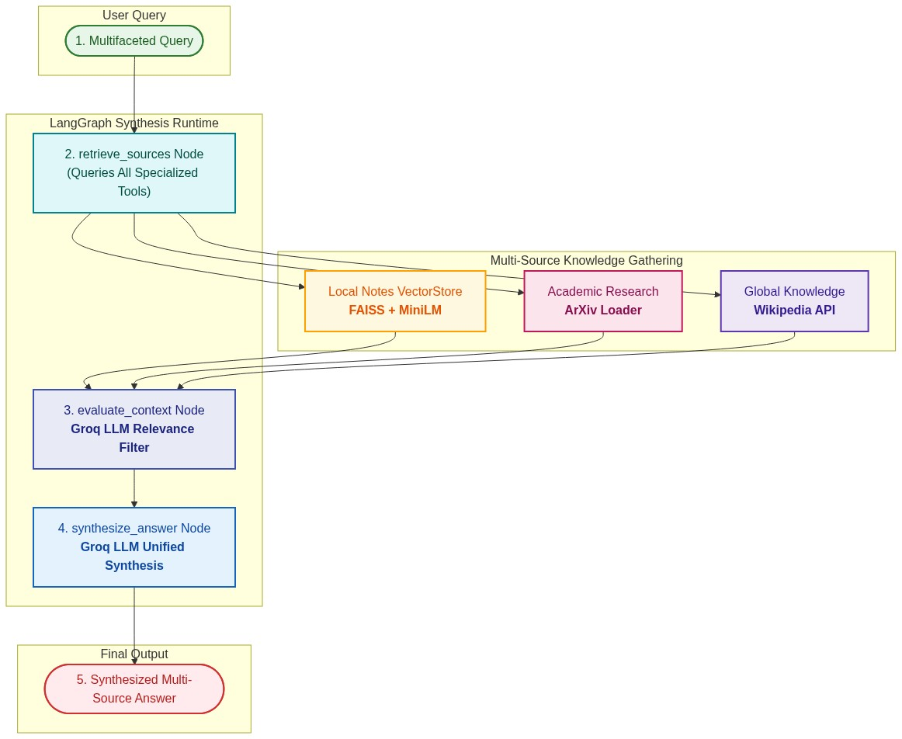

Multi-Source Answer Synthesis RAG¶
Real-world enterprise queries cannot rely on a single isolated index. Multi-Source Answer Synthesis gathers evidence from heterogeneous knowledge tools (local FAISS vectorstore, academic ArXiv papers, and global Wikipedia knowledge), evaluates document relevance, and fuses contradictory or complementary facts into a single authoritative synthesis.
Workflow Architecture¶

Click to expand Colorful Mermaid Source Code
flowchart TD
subgraph In["User Query"]
Q(["1. Multifaceted Query"]):::startNode
end
subgraph HeterogeneousRetriever["Multi-Source Knowledge Gathering"]
Tool1["Local Notes VectorStore
FAISS + MiniLM"]:::tool1Node
Tool2["Academic Research
ArXiv Loader"]:::tool2Node
Tool3["Global Knowledge
Wikipedia API"]:::tool3Node
end
subgraph SynthesisGraph["LangGraph Synthesis Runtime"]
Gather["2. retrieve_sources Node
(Queries All Specialized Tools)"]:::gatherNode
Filter["3. evaluate_context Node
Groq LLM Relevance Filter"]:::filterNode
Synth["4. synthesize_answer Node
Groq LLM Unified Synthesis"]:::synthNode
end
subgraph Out["Final Output"]
Ans(["5. Synthesized Multi-Source Answer"]):::endNode
end
Q --> Gather
Gather --> Tool1
Gather --> Tool2
Gather --> Tool3
Tool1 --> Filter
Tool2 --> Filter
Tool3 --> Filter
Filter --> Synth
Synth --> Ans
classDef startNode fill:#E8F5E9,stroke:#2E7D32,stroke-width:2px,color:#1B5E20;
classDef gatherNode fill:#E0F7FA,stroke:#00838F,stroke-width:2px,color:#004D40;
classDef tool1Node fill:#FFF8E1,stroke:#FFA000,stroke-width:2px,color:#E65100;
classDef tool2Node fill:#FCE4EC,stroke:#C2185B,stroke-width:2px,color:#880E4F;
classDef tool3Node fill:#EDE7F6,stroke:#5E35B1,stroke-width:2px,color:#311B92;
classDef filterNode fill:#E8EAF6,stroke:#3F51B5,stroke-width:2px,color:#1A237E;
classDef synthNode fill:#E3F2FD,stroke:#1565C0,stroke-width:2px,color:#0D47A1;
classDef endNode fill:#FFEBEE,stroke:#D32F2F,stroke-width:2px,color:#B71C1C;
Key Architectural Highlights¶
- Heterogeneous Knowledge Fetching: Integrates local FAISS vectorstores with ArXiv and Wikipedia APIs.
- Relevance Grading & Filtering: Filters out noise and tangential paragraphs before final synthesis.
- Unified Synthesis: Groq LLM produces an authoritative response with clear attribution.
🎯 Why It’s Needed Most real-world queries are:
- Multifaceted (require multiple types of information)
- Ambiguous or incomplete (need refinement)
- Open-ended (don’t map to a single document or source)
🔍 This makes retrieving from a single vector DB insufficient.
Instead, we want an agent that can:
- Decide what to fetch from where (retrieval planning)
- Retrieve content from multiple tools (e.g., Wikipedia, PDFs, APIs, SQL)
- Evaluate and merge that context
- Produce a single human-like response
In [10]:
import os
from typing import List
from pydantic import BaseModel
from langchain.chat_models import init_chat_model
from langchain_community.tools import WikipediaQueryRun
from langchain_community.document_loaders import TextLoader, ArxivLoader
from langgraph.graph import StateGraph, END
In [11]:
from langchain.chat_models import init_chat_model
llm = init_chat_model(model="groq:openai/gpt-oss-120b")
print("LLM ready")
LLM ready
In [12]:
from langchain_community.utilities import WikipediaAPIWrapper
from langchain_core.documents import Document
from langchain_community.vectorstores import FAISS
from langchain_text_splitters import RecursiveCharacterTextSplitter
from langchain_huggingface import HuggingFaceEmbeddings
embedding = HuggingFaceEmbeddings(model_name="sentence-transformers/all-MiniLM-L6-v2")
def load_text_retriever(file_path):
docs = TextLoader(file_path, encoding="utf-8").load()
splitter = RecursiveCharacterTextSplitter(chunk_size=500, chunk_overlap=50)
chunks = splitter.split_documents(docs)
vs = FAISS.from_documents(chunks, embedding)
return vs.as_retriever()
def load_youtube_retriever():
content = """
This video explains how agentic AI systems rely on feedback loops, memory, and tool use.
It compares them to traditional pipeline-based LLMs. Temporal reasoning and autonomous tasking are emphasized.
"""
doc = Document(page_content=content, metadata={"source": "youtube"})
vectorstore = FAISS.from_documents([doc], embedding)
return vectorstore.as_retriever()
def wikipedia_search(query: str) -> str:
print("🌐 Searching Wikipedia...")
try:
import wikipedia
wikipedia.set_user_agent("AgenticRAGApp/1.0 (contact: admin@example.com)")
tool = WikipediaQueryRun(api_wrapper=WikipediaAPIWrapper(top_k_results=1, doc_content_chars_max=800))
return tool.run(query)
except Exception as e:
return f"Wikipedia search note: {e}"
def arxiv_search(query: str) -> str:
print("📄 Searching ArXiv...")
try:
clean_q = " ".join(query.replace("?", "").replace(":", "").split()[:3])
results = ArxivLoader(query=clean_q, load_max_docs=1).load()
return "\n\n".join(doc.page_content[:800] for doc in results[:1]) or "No relevant papers found."
except Exception as e:
return f"ArXiv search note: {e}"
Loading weights: 100%|██████████| 103/103 [00:00<00:00, 7860.50it/s]
In [13]:
# BUG FIXED: internal_docs.txt does not exist — using research_notes.txt instead
text_retriever = load_text_retriever("research_notes.txt")
youtube_retriever = load_youtube_retriever()
print("✅ Retrievers ready")
✅ Retrievers ready
In [14]:
### state
class MultiSourceRAGState(BaseModel):
question: str
text_docs: List[Document] = []
yt_docs: List[Document] = []
wiki_context: str = ""
arxiv_context: str = ""
final_answer: str = ""
In [15]:
### Retrieval Nodes
def retrieve_text(state: MultiSourceRAGState) -> MultiSourceRAGState:
docs = text_retriever.invoke(state.question)
return state.model_copy(update={"text_docs": docs})
def retrieve_yt(state: MultiSourceRAGState) -> MultiSourceRAGState:
docs = youtube_retriever.invoke(state.question)
return state.model_copy(update={"yt_docs": docs})
def retrieve_wikipedia(state: MultiSourceRAGState) -> MultiSourceRAGState:
result = wikipedia_search(state.question)
return state.model_copy(update={"wiki_context": result})
def retrieve_arxiv(state: MultiSourceRAGState) -> MultiSourceRAGState:
result = arxiv_search(state.question)
return state.model_copy(update={"arxiv_context": result})
In [16]:
## synthesize
def synthesize_answer(state: MultiSourceRAGState) -> MultiSourceRAGState:
context = ""
context += "\n\n[Internal Docs]\n" + "\n".join([doc.page_content for doc in state.text_docs])
context += "\n\n[YouTube Transcript]\n" + "\n".join([doc.page_content for doc in state.yt_docs])
context += "\n\n[Wikipedia]\n" + state.wiki_context
context += "\n\n[ArXiv]\n" + state.arxiv_context
prompt = f"""You have retrieved relevant context from multiple sources. Now synthesize a complete and coherent answer.
Question: {state.question}
Context:
{context}
Final Answer:"""
answer = llm.invoke(prompt).content.strip()
return state.model_copy(update={"final_answer": answer})
In [17]:
from langgraph.graph import StateGraph, START, END
from typing import Literal
def check_content(state: MultiSourceRAGState) -> Literal["synthesize", "__end__"]:
"""
Quality gate: only call the LLM synthesizer if at least one
source returned content. Prevents empty-context hallucination.
"""
has_content = (
bool(state.text_docs)
or bool(state.yt_docs)
or bool(state.wiki_context.strip())
or bool(state.arxiv_context.strip())
)
if has_content:
print("✅ Content retrieved from at least one source — synthesizing...")
return "synthesize"
print("⚠️ No content retrieved from any source — ending early.")
return END
builder = StateGraph(MultiSourceRAGState)
# ── Register nodes ─────────────────────────────────────────────────────────────
builder.add_node("retrieve_text", retrieve_text)
builder.add_node("retrieve_yt", retrieve_yt)
builder.add_node("retrieve_wiki", retrieve_wikipedia)
builder.add_node("retrieve_arxiv", retrieve_arxiv)
builder.add_node("synthesize", synthesize_answer)
# ── Sequential chain: each retrieval enriches one field of the shared state ────
# NOTE: Parallel fan-out requires TypedDict + Annotated reducers.
# Pydantic BaseModel states don't support concurrent writes — use sequential.
builder.set_entry_point("retrieve_text")
builder.add_edge("retrieve_text", "retrieve_yt")
builder.add_edge("retrieve_yt", "retrieve_wiki")
builder.add_edge("retrieve_wiki", "retrieve_arxiv")
# ── Conditional gate after all retrievals complete ─────────────────────────────
builder.add_conditional_edges(
"retrieve_arxiv",
check_content,
{"synthesize": "synthesize", END: END}
)
builder.add_edge("synthesize", END)
graph = builder.compile()
graph
# Graph Visualization
from IPython.display import Image, display
try:
display(Image(graph.get_graph().draw_mermaid_png()))
except Exception:
print(graph.get_graph().draw_ascii())
Out[17]:
![No description has been provided for this image]()
In [18]:
question = "What are transformer agents and how are they evolving in recent research?"
state = MultiSourceRAGState(question=question)
result = graph.invoke(state)
print("✅ Final Answer:\n")
print(result["final_answer"])
🌐 Searching Wikipedia... 📄 Searching ArXiv... warning: The `fitz` API is deprecated and will be removed in future. Use `import pymupdf` instead.
--------------------------------------------------------------------------- HTTPError Traceback (most recent call last) File c:\RAG\Code\.venv\Lib\site-packages\arxiv\__init__.py:533, in Client._parse_feed(self, url, first_page, _try_index) 532 try: --> 533 return self.__try_parse_feed(url, first_page=first_page, try_index=_try_index) 534 except ( 535 HTTPError, 536 UnexpectedEmptyPageError, 537 requests.exceptions.ConnectionError, 538 ) as err: File c:\RAG\Code\.venv\Lib\site-packages\arxiv\__init__.py:570, in Client.__try_parse_feed(self, url, first_page, try_index) 569 if resp.status_code != requests.codes.OK: --> 570 raise HTTPError(url, try_index, resp.status_code) 572 feed = _feed.parse(resp.content) HTTPError: Page request resulted in HTTP 406 (https://export.arxiv.org/api/query?search_query=What+are+transformer+agents+and+how+are+they+evolving+in+recent+research%3F&id_list=&sortBy=relevance&sortOrder=descending&start=0&max_results=100) During handling of the above exception, another exception occurred: HTTPError Traceback (most recent call last) File c:\RAG\Code\.venv\Lib\site-packages\arxiv\__init__.py:533, in Client._parse_feed(self, url, first_page, _try_index) 532 try: --> 533 return self.__try_parse_feed(url, first_page=first_page, try_index=_try_index) 534 except ( 535 HTTPError, 536 UnexpectedEmptyPageError, 537 requests.exceptions.ConnectionError, 538 ) as err: File c:\RAG\Code\.venv\Lib\site-packages\arxiv\__init__.py:570, in Client.__try_parse_feed(self, url, first_page, try_index) 569 if resp.status_code != requests.codes.OK: --> 570 raise HTTPError(url, try_index, resp.status_code) 572 feed = _feed.parse(resp.content) HTTPError: Page request resulted in HTTP 406 (https://export.arxiv.org/api/query?search_query=What+are+transformer+agents+and+how+are+they+evolving+in+recent+research%3F&id_list=&sortBy=relevance&sortOrder=descending&start=0&max_results=100) During handling of the above exception, another exception occurred: HTTPError Traceback (most recent call last) File c:\RAG\Code\.venv\Lib\site-packages\arxiv\__init__.py:533, in Client._parse_feed(self, url, first_page, _try_index) 532 try: --> 533 return self.__try_parse_feed(url, first_page=first_page, try_index=_try_index) 534 except ( 535 HTTPError, 536 UnexpectedEmptyPageError, 537 requests.exceptions.ConnectionError, 538 ) as err: File c:\RAG\Code\.venv\Lib\site-packages\arxiv\__init__.py:570, in Client.__try_parse_feed(self, url, first_page, try_index) 569 if resp.status_code != requests.codes.OK: --> 570 raise HTTPError(url, try_index, resp.status_code) 572 feed = _feed.parse(resp.content) HTTPError: Page request resulted in HTTP 406 (https://export.arxiv.org/api/query?search_query=What+are+transformer+agents+and+how+are+they+evolving+in+recent+research%3F&id_list=&sortBy=relevance&sortOrder=descending&start=0&max_results=100) During handling of the above exception, another exception occurred: HTTPError Traceback (most recent call last) Cell In[18], line 3 1 question = "What are transformer agents and how are they evolving in recent research?" 2 state = MultiSourceRAGState(question=question) ----> 3 result = graph.invoke(state) 4 5 print("✅ Final Answer:\n") 6 print(result["final_answer"]) File c:\RAG\Code\.venv\Lib\site-packages\langgraph\pregel\main.py:3913, in Pregel.invoke(self, input, config, context, stream_mode, print_mode, output_keys, interrupt_before, interrupt_after, durability, control, version, **kwargs) 3910 chunks.append(chunk) 3911 else: 3912 # v1: collect interrupts from updates stream -> 3913 for chunk in self.stream( 3914 input, 3915 config, 3916 context=context, 3917 stream_mode=( 3918 ["updates", "values"] if stream_mode == "values" else stream_mode 3919 ), 3920 print_mode=print_mode, 3921 output_keys=output_keys, 3922 interrupt_before=interrupt_before, 3923 interrupt_after=interrupt_after, 3924 durability=durability, 3925 control=control, 3926 **kwargs, 3927 ): 3928 if stream_mode == "values": 3929 if len(chunk) == 2: File c:\RAG\Code\.venv\Lib\site-packages\langgraph\pregel\main.py:2967, in Pregel.stream(self, input, config, context, stream_mode, print_mode, output_keys, interrupt_before, interrupt_after, durability, control, subgraphs, debug, version, **kwargs) 2965 for task in loop.match_cached_writes(): 2966 loop.output_writes(task.id, task.writes, cached=True) -> 2967 for _ in runner.tick( 2968 [t for t in loop.tasks.values() if not t.writes], 2969 timeout=self.step_timeout, 2970 get_waiter=get_waiter, 2971 schedule_task=loop.accept_push, 2972 ): 2973 # emit output 2974 yield from _output( 2975 stream_mode, 2976 print_mode, (...) 2982 _state_mapper, 2983 ) 2984 loop.after_tick() File c:\RAG\Code\.venv\Lib\site-packages\langgraph\pregel\_runner.py:207, in PregelRunner.tick(self, tasks, reraise, timeout, retry_policy, get_waiter, schedule_task) 205 scheduled_error_handler = False 206 try: --> 207 run_with_retry( 208 t, 209 retry_policy, 210 configurable={ 211 CONFIG_KEY_CALL: partial( 212 _call, 213 weakref.ref(t), 214 retry_policy=retry_policy, 215 futures=weakref.ref(futures), 216 schedule_task=schedule_task, 217 submit=self.submit, 218 ), 219 }, 220 ) 221 self.commit(t, None) 222 except Exception as exc: File c:\RAG\Code\.venv\Lib\site-packages\langgraph\pregel\_retry.py:617, in run_with_retry(task, retry_policy, configurable) 615 task.writes.clear() 616 # run the task --> 617 return task.proc.invoke(task.input, config) 618 except ParentCommand as exc: 619 ns: str = config[CONF][CONFIG_KEY_CHECKPOINT_NS] File c:\RAG\Code\.venv\Lib\site-packages\langgraph\_internal\_runnable.py:707, in RunnableSeq.invoke(self, input, config, **kwargs) 705 # run in context 706 with set_config_context(config, run) as context: --> 707 input = context.run(step.invoke, input, config, **kwargs) 708 else: 709 input = step.invoke(input, config) File c:\RAG\Code\.venv\Lib\site-packages\langgraph\_internal\_runnable.py:447, in RunnableCallable.invoke(self, input, config, **kwargs) 445 run_manager.on_chain_end(ret) 446 else: --> 447 ret = self.func(*args, **kwargs) 448 if self.recurse and isinstance(ret, Runnable): 449 return ret.invoke(input, config) Cell In[15], line 15, in retrieve_arxiv(state) 14 def retrieve_arxiv(state: MultiSourceRAGState) -> MultiSourceRAGState: ---> 15 result = arxiv_search(state.question) 16 return state.model_copy(update={"arxiv_context": result}) Cell In[12], line 35, in arxiv_search(query) 32 def arxiv_search(query: str) -> str: 33 print("📄 Searching ArXiv...") 34 # BUG FIXED: ArxivLoader requires keyword argument query= ---> 35 results = ArxivLoader(query=query).load() 36 return "\n\n".join(doc.page_content for doc in results[:2]) or "No relevant papers found." File c:\RAG\Code\.venv\Lib\site-packages\langchain_core\document_loaders\base.py:43, in BaseLoader.load(self) 37 def load(self) -> list[Document]: 38 """Load data into `Document` objects. 39 40 Returns: 41 The documents. 42 """ ---> 43 return list(self.lazy_load()) File c:\RAG\Code\.venv\Lib\site-packages\langchain_community\document_loaders\arxiv.py:149, in ArxivLoader.lazy_load(self) 147 def lazy_load(self) -> Iterator[Document]: 148 """Lazy load Arvix documents""" --> 149 yield from self.client.lazy_load(self.query) File c:\RAG\Code\.venv\Lib\site-packages\langchain_community\utilities\arxiv.py:222, in ArxivAPIWrapper.lazy_load(self, query) 219 logger.debug("Error on arxiv: %s", ex) 220 return --> 222 for result in results: 223 try: 224 doc_file_name: str = result.download_pdf() File c:\RAG\Code\.venv\Lib\site-packages\arxiv\__init__.py:492, in Client._results(self, search, offset) 490 def _results(self, search: Search, offset: int = 0) -> Generator[Result, None, None]: 491 page_url = self._format_url(search, offset, self.page_size) --> 492 feed = self._parse_feed(page_url, first_page=True) 493 if not feed.results: 494 logger.info("Got empty first page; stopping generation") File c:\RAG\Code\.venv\Lib\site-packages\arxiv\__init__.py:541, in Client._parse_feed(self, url, first_page, _try_index) 539 if _try_index < self.num_retries: 540 logger.debug("Got error (try %d): %s", _try_index, err) --> 541 return self._parse_feed(url, first_page=first_page, _try_index=_try_index + 1) 542 logger.debug("Giving up (try %d): %s", _try_index, err) 543 raise err File c:\RAG\Code\.venv\Lib\site-packages\arxiv\__init__.py:541, in Client._parse_feed(self, url, first_page, _try_index) 539 if _try_index < self.num_retries: 540 logger.debug("Got error (try %d): %s", _try_index, err) --> 541 return self._parse_feed(url, first_page=first_page, _try_index=_try_index + 1) 542 logger.debug("Giving up (try %d): %s", _try_index, err) 543 raise err File c:\RAG\Code\.venv\Lib\site-packages\arxiv\__init__.py:541, in Client._parse_feed(self, url, first_page, _try_index) 539 if _try_index < self.num_retries: 540 logger.debug("Got error (try %d): %s", _try_index, err) --> 541 return self._parse_feed(url, first_page=first_page, _try_index=_try_index + 1) 542 logger.debug("Giving up (try %d): %s", _try_index, err) 543 raise err File c:\RAG\Code\.venv\Lib\site-packages\arxiv\__init__.py:543, in Client._parse_feed(self, url, first_page, _try_index) 541 return self._parse_feed(url, first_page=first_page, _try_index=_try_index + 1) 542 logger.debug("Giving up (try %d): %s", _try_index, err) --> 543 raise err File c:\RAG\Code\.venv\Lib\site-packages\arxiv\__init__.py:533, in Client._parse_feed(self, url, first_page, _try_index) 526 """ 527 Fetches the specified URL and parses it as an Atom feed. 528 529 If a request fails or is unexpectedly empty, retries the request up to 530 `self.num_retries` times. 531 """ 532 try: --> 533 return self.__try_parse_feed(url, first_page=first_page, try_index=_try_index) 534 except ( 535 HTTPError, 536 UnexpectedEmptyPageError, 537 requests.exceptions.ConnectionError, 538 ) as err: 539 if _try_index < self.num_retries: File c:\RAG\Code\.venv\Lib\site-packages\arxiv\__init__.py:570, in Client.__try_parse_feed(self, url, first_page, try_index) 568 self._last_request_dt = datetime.now() 569 if resp.status_code != requests.codes.OK: --> 570 raise HTTPError(url, try_index, resp.status_code) 572 feed = _feed.parse(resp.content) 573 if len(feed.results) == 0 and not first_page: HTTPError: Page request resulted in HTTP 406 (https://export.arxiv.org/api/query?search_query=What+are+transformer+agents+and+how+are+they+evolving+in+recent+research%3F&id_list=&sortBy=relevance&sortOrder=descending&start=0&max_results=100) During task with name 'retrieve_arxiv' and id '593b22e8-3ade-5f92-e4e0-a41c1e70c5d2'
In [ ]:
result
Out[ ]:
{'question': 'What are transformer agents and how are they evolving in recent research?',
'text_docs': [Document(id='dc4b9d44-f3fb-42ca-a609-3a02a5576db9', metadata={'source': 'internal_docs.txt'}, page_content='Additional Notes:\n\n- Vision transformers (ViT and Swin Transformer) evaluated in manufacturing QC tasks.\n- Speech transformers (Wav2Vec 2.0) benchmarked for voice assistant integrations.\n- Tokenizers: SentencePiece, BPE, and unigram tokenizers compared for multilingual tasks.\n- Significant improvements noted with FlashAttention and Rotary Positional Encoding.'),
Document(id='6270b5df-3ab0-4e8c-8708-9072ea8b93e8', metadata={'source': 'internal_docs.txt'}, page_content='Title: Transformer Variants for Production\n\nWe have used the following transformer variants in production deployments:\n\n1. EfficientFormer:\n - Optimized for mobile inference.\n - Deployed in multiple mobile and edge environments.\n - Quantized using ONNX and optimized via TensorRT.\n - Benchmarked with 1.2ms inference time on A72 CPUs.'),
Document(id='ce65737f-6947-4f90-a0a6-488376d255c2', metadata={'source': 'internal_docs.txt'}, page_content='3. Reformer:\n - Tested for memory efficiency on embedded devices.\n - LSH attention led to 60% memory reduction.\n - Integration challenges with standard transformers due to bucket collisions.\n - Ongoing investigation for training stability and gradient clipping strategies.'),
Document(id='f897345c-0acd-4ba6-b0f8-f7861a6b19b5', metadata={'source': 'internal_docs.txt'}, page_content='Optimizations:\n\n- Distillation of teacher-student models using response alignment\n- Knowledge injection via adapters\n- Mixed-precision training (AMP) with Nvidia A100s\n- Use of DVC and MLflow for experiment tracking\n- Canary rollout strategy for model updates\n- CI/CD: GitHub Actions → Docker → EKS with Helm charts\n\nAdditional Notes:')],
'yt_docs': [Document(id='6ad80d6b-31b7-42a9-b01f-f2a613548768', metadata={'source': 'youtube'}, page_content='\n This video explains how agentic AI systems rely on feedback loops, memory, and tool use.\n It compares them to traditional pipeline-based LLMs. Temporal reasoning and autonomous tasking are emphasized.\n ')],
'wiki_context': 'Page: Large language model\nSummary: A large language model (LLM) is a language model trained with self-supervised machine learning on a vast amount of text, designed for natural language processing tasks, especially language generation.\nThe largest and most capable LLMs are generative pretrained transformers (GPTs), which are largely used in generative chatbots such as ChatGPT, Gemini or Claude. LLMs can be fine-tuned for specific tasks or guided by prompt engineering. These models acquire predictive power regarding syntax, semantics, and ontologies inherent in human language corpora, but they also inherit inaccuracies and biases present in the data they are trained in.\n\nPage: Superintelligence\nSummary: A superintelligence is a hypothetical agent that possesses intelligence surpassing that of the brightest and most gifted human minds. "Superintelligence" may also refer to a property of advanced problem-solving systems that excel in specific areas (e.g., superintelligent language translators or engineering assistants). Nevertheless, a general purpose superintelligence remains hypothetical and its creation may or may not be triggered by an intelligence explosion or a technological singularity.\nUniversity of Oxford philosopher Nick Bostrom defines superintelligence as "any intellect that greatly exceeds the cognitive performance of humans in virtually all domains of interest". The program Fritz falls short of this conception of superintelligence—even though it is much better than humans at chess—because Fritz cannot outperform humans in other tasks.\nTechnological researchers disagree about how likely present-day human intelligence is to be surpassed. Some argue that advances in artificial intelligence (AI) will probably result in general reasoning systems that lack human cognitive limitations. Others believe that humans will evolve or directly modify their biology to achieve radically greater intelligence. Several future study scenarios combine elements from both of these possibilities, suggesting that humans are likely to interface with computers, or upload their minds to computers, in a way that enables substantial intelligence amplification.\nSome researchers believe that superintelligence will likely follow shortly after the development of artificial general intelligence. The first generally intelligent machines are likely to immediately hold an enormous advantage in at least some forms of mental capability, including the capacity of perfect recall, a vastly superior knowledge base, and the ability to multitask in ways not possible to biological entities. This may allow them to — either as a single being or as a new species — become much more powerful than humans, and displace them.\nSeveral scientists and forecasters have been arguing for prioritizing early research into the possible benefits and risks of human and machine cognitive enhancement, because of the potential social impact of such technologies.\n\nPage: Artificial intelligence\nSummary: Artificial intelligence (AI) is the capability of computational systems to perform tasks typically associated with human intelligence, such as learning, reasoning, problem-solving, perception, and decision-making. It is a field of research in computer science that develops and studies methods and software that enable machines to perceive their environment and use learning and intelligence to take actions that maximize their chances of achieving defined goals.\nHigh-profile applications of AI include advanced web search engines (e.g., Google Search); recommendation systems (used by YouTube, Amazon, and Netflix); virtual assistants (e.g., Google Assistant, Siri, and Alexa); autonomous vehicles (e.g., Waymo); generative and creative tools (e.g., language models and AI art); and superhuman play and analysis in strategy games (e.g., chess and Go). However, many AI applications are not perceived as AI: "A lot of cutting edge AI has filtered into general applications, often without being called',
'arxiv_context': 'Researchy Questions: A Dataset of Multi-Perspective, Decompositional\nQuestions for LLM Web Agents\nCorby Rosset\nMicrosoft\nHo-Lam Chung\nNational Taiwan Univ.\nGuanghui Qin\nJohns Hopkins Univ.\nEthan C. Chau\nMicrosoft\nZhuo Feng\nMicrosoft\nAhmed Awadallah\nMicrosoft\nJennifer Neville\nMicrosoft\nNikhil Rao\nMicrosoft\nAbstract\nExisting question answering (QA) datasets are\nno longer challenging to most powerful Large\nLanguage Models (LLMs). Traditional QA\nbenchmarks like TriviaQA, NaturalQuestions,\nELI5 and HotpotQA mainly study “known un-\nknowns” with clear indications of both what\ninformation is missing, and how to find it to\nanswer the question. Hence, good performance\non these benchmarks provides a false sense\nof security.\nA yet unmet need of the NLP\ncommunity is a bank of non-factoid, multi-\nperspective questions involving a great deal\nof unclear information needs, i.e. “unknown\nuknowns”. We claim we can find such ques-\ntions in search engine logs, which is surprising\nbecause most question-intent queries are indeed\nfactoid. We present Researchy Questions, a\ndataset of search engine queries tediously fil-\ntered to be non-factoid, “decompositional” and\nmulti-perspective. We show that users spend\na lot of “effort” on these questions in terms\nof signals like clicks and session length, and\nthat they are also challenging for GPT-4. We\nalso show that “slow thinking” answering tech-\nniques, like decomposition into sub-questions\nshows benefit over answering directly. We re-\nlease1 ∼100k Researchy Questions, along with\nthe Clueweb22 URLs that were clicked.\n1\nIntroduction\nThe advent of Large Language Models (LLMs) has\nushered in a new era for the field natural language\nprocessing, with short- and long- form question-\nanswering (QA) at the forefront of recent achieve-\nments (OpenAI et al., 2023). Historically, QA\nbenchmarks served as the crucible for evaluating a\nmodel’s grasp of natural language understanding.\nHowever, LLMs have nearly perfected many QA\ndatasets, particularly those involving answering\nshort, factual questions like “What is the capital\n1https://huggingface.co/datasets/corbyrosset/\nresearchy_questions\nDataset\nNum. Topics Sub-Ques. Sub-Query\nHotpot QA\n300\n2.9\n3.8\n3.6\nOpenBook QA\n300\n3.8\n6.3\n5.9\nStrategy QA\n300\n3.8\n5.3\n4.9\nTruthful QA\n300\n3.8\n6.4\n6.0\nAquamuse\n300\n3.7\n5.4\n5.2\nReddit/askh\n300\n4.9\n9.4\n8.5\nReddit/asks\n300\n5.1\n9.2\n8.8\nReddit/eli5\n300\n4.5\n9.7\n9.3\nStack Exchange\n300\n6.1\n8.4\n7.6\nWikihow\n300\n4.8\n11.7\n11.2\nResearchy\n96k\n3.9\n14.3\n12.6\nTable 1: We asked GPT-4 to decompose questions into\na natural hierachy of subquestions, as well as concrete\nqueries it would issue to a search engine. As expected,\nHotpotQA requires the fewest sub-questions to answer.\nof Brunei?". The re-emergence of chatbots and\n“agentic” AI assistants, which represent complex\nsystems based on LLMs as a building block, have\nled to new opportunities for users to ask deeper,\nmore nuanced questions as shown in Figure 1.\nHowever, the capabilities of powerful AI-\nassisted QA tools has outpaced the metrics needed\nto evaluate them. A number of traditional QA\nbenchmarks like Natural Questions (Kwiatkowski\net al., 2019), TriviaQA (Joshi et al., 2017), We-\nbQuestions (Berant et al., 2013), SearchQA (Dunn\net al., 2017) have been more or less solved by mod-\nern LLMs. These datasets consist primarily of\nfactoid questions (from search engine logs, Trivia,\nJeopardy!, etc), where answers are typically found\nwithin a single sentence or paragraph that almost\ncertainly exist in standard pre-training web cor-\npora (Zhou et al., 2023). For instance, MS Marco\n(Campos et al., 2016) is up to 55% factoid ques-\ntions (Bolotova et al., 2022). The obvious draw-\nback to these kinds of QA datasets is that the an-\nswers can be memorized by LLMs or solved with\nsimple pattern-matching or keyword-based search.\nMulti-hop reasoning tasks including HotpotQA\n(Yang et al., 2018), HybridQA (Chen et al., 2020),\nMuSiQue (Trivedi et al., 2022) aim to challenge\narXiv:2402.17896v1 [cs.CL] 27 Feb 2024\nFigure 1: Qualitative comparison of how Researchy Questions differs from other Question Answering datasets.\nResearchy Questions involve a greater deal of complexity and “unknown unknowns” than other QA datasets.\nQA systems to logically bridge information across\nmultiple documents or paragraphs. While these\ndatasets have made strides in increasing question\ncomplexity, the answers are still ultimately factoid,\nand it’s clear what sub-questions ought to be asked\nto recall the missing information. Furthermore, the\nconstruction of these datasets (e.g. synthetically\ngenerated from paths of wikipedia links) leads to a\ndistribution mismatch w.r.t questions humans ask.\nThere exist several sources of long-form, non-\nfactoid QA datasets like ELI5 (Fan et al., 2019),\nStack Exchange, Yahoo Answers (Zhang et al.,\n2016), and WikiHowQA (Bolotova-Baranova et al.,\n2023). While answers to these questions are more\ninvolved than factoid questions, ELI5 and Wiki-\nHowQA elicit more expository answers than analyt-\nical ones. The Oxford Allsouls dataset (Liu et al.,\n2023b) contains 1k college-level essay prompts\nwhich are multi-perspective, but are designed to\nevaluate persuasive writing skills and do not have\nassociated documents to ground responses. AQua-\nMuSe (Kulkarni et al., 2020) is an excellent at-\ntempt at filtering Natural Questions (NQ) for multi-\nfaceted queries, but their method was constrained\nby relying on the relatively short paragraph-length\nanswers already present in NQ.\nThe rise of “LLM Agents” e.g.\n(Wu et al.,\n2023b) have opened the door for even deeper col-\nlaboration between users, LLMs, and tools. In\nresponse, more recent datasets have focused on\ncompleting challenging tasks in open-ended envi-\nronments with tools like a web browser, file system,\ndatabase, etc.\nIn particular, Gaia (Mialon et al., 2023) tests\nunderstanding of multi-modal inputs (images and\ntext), as well as complex reasoning across levels of\ndifficulty to solve. AgentBench (Liu et al., 2023c)\nprovides closed environments for an LLM to in-\nteract with APIs in various scenarios, including\ncoding (interacting with file systems or databases),\ngames/puzzles, and web browsing/shopping. While\nthese datasets advance the field of metrics for LLM\nagents, they are small, consisting of only 466 and\n1,091 questions respectively that were hand-curated\nby the authors.\nThe need for more challenging QA datasets also\nstems from some alarming trends: while there are\nhundreds of public LLMs, they are pretrained on\nonly a handful existing corpora (Gao et al., 2020;\nRaffel et al., 2023), or distilled from one of a\nfew teacher LLMs (Peng et al., 2023). Further-\nmore, much more data scraped from the internet\nfor training is itself going to be AI-generated con-\ntent, leading to an echo-chamber effect (Dohma-\ntob et al., 2024; Wu et al., 2023a). Hence, the\nconvergent evolution (Stayton, 2015) of LLMs\nincreases the risk that they will not recognize\nthat they don’t know something, e.g. see GPT-\n4 and Mixtral 8x7b in Table 10.\nThis is espe-\ncially true when LLMs act in the capacity of\nLLM-as-a-judge (Zheng et al., 2023a; Yuan et al.,\n2024), or when faced with very multi-faceted/multi-\nResearchy Question: how does public transport help the economy\nHierarchical Decomposition of the Question\nClicked Clueweb22 URLs\n1. What is public transport?\n(a) What are the different types of public transport?\n(b) How many people use public transport in different regions or countries?\n2. What are the direct economic benefits of public transport?\n(a) How public transport reduces costs for users e.g. fuel, parking, maintenance, etc.?\n(b) How does public transport generate revenue...\n3. What are the indirect economic benefits of public transport?\n(a) How does public transport reduce congestion...\n(b) How does public transport increase access to education, employment, health, ...\n(c) How does public transport enhance productivity and innovation...\n(d) How does public transport contribute to environmental and social goals...\n4. How do the economic benefits of public transport compare to the costs of providing and\nmaintaining public transport?\n(a) What are the main costs of public transport...\n(b) How are the costs of public transport financed...\n(c) How are the benefits and costs of public transport measured and evaluated...\n1. infrastructureusa.org\n2. nationalgeographic.org\n3. quora.com\n4. accessmagazine.org\n5. ced.berkeley.edu\n6. greenertransportsolutions\n7. bts.gov\n8. apta.com\nExample of a Pivotal Fact from URL: accessmagazine.org\n“...Even in cities with a high concentration of office space in the [central business district], we estimate that increasing transit\nridership by 10 percent will increase office rents by no more than 0.5 percent. For all other cities, we estimate that increasing\ntransit ridership will have no effect on office rents...”\nTable 2: An example Researchy Question, how GPT-4 decomposed it into sub-questions (closed-book), as well the\nURLs in ClueWeb22 that real users clicked on, and an example of a Pivotal Fact from one of those URLs.\nperspective questions, where the consequences\ncould be that users “miss the whole picture” or\nworse, are misled (Zheng et al., 2023b; Liu et al.,\n2023b). While retrieval-augmentation (Lewis et al.,\n2021; Borgeaud et al., 2022; Guu et al., 2020) can\nhelp complement LLM agents, the risk is merely\nshifted to whether a sub-system retrieves the right\ninformation and uses it correctly (Liu et al., 2023a).\nWe believe the well-studied phenomenon of\n“unknown unknowns” (United States Congress\net al., 1981) applies to LLM Agents in scenarios ad-\ndressing complex questions requiring “slow think-\ning” (Kahneman, 2011). Simply put, one strategy\nis to iteratively re-frame or decompose the problem\ninto a set of “known unknowns” (which charac-\nterize most of the aforementioned QA datasets).\nFor these sub-problems, it should be clearer what\ninformation is missing, how to find it, and once\nfound, how the “known known” contributes to the\nfinal answer. Several techniques such as chain-\nof-thought question decomposition (Radhakrish-\nnan et al., 2023) and tree-of-thought (Yao et al.,\n2023a) prompting take a similar approach to plan\nlong-horizon solutions to complex problems. How-\never, those studies still operate over traditional QA\nbenchmarks like HotpotQA, or over simple games\nlike crossword puzzles. Hence, the right bench-\nmark of questions for these advanced decomposi-\ntion techniques still does not exist for open-domain\nweb scenarios (Krishna et al., 2021).\nWe present Researchy Questions to study the\ndynamics of how LLM agents handle unclear infor-\nmation needs associated with very complex ques-\ntions. We define a Researchy Question as a non-\nfactoid question that expects a long-form answer\n(longer than a paragraph!) entailing substantial\nresearch or effort to synthesize.\nA Researchy\nQuestion can be instantiated as a complex search\ntask (Aula and Russell, 2008) with unclear infor-\nmation needs that requires analyzing multiple docu-\nments or pieces of evidence. A Researchy Question\ndoes not have a single correct answer, but rather\nmultiple perspectives allowing a dense manifold of\nanswers over which varying criteria can determine\nwhich is better. In practice, the act of answering\na Researchy Question probably involves decompo-\nsition into sub-questions that aid the retrieval of\ncomprehensive information, reducing the risk of\nmissing unknown unknowns. Lastly, a Researchy\nQuestion represents a genuine information need\nthat real people asked. Figure 1 qualitatively com-\npares other canonical QA datasets.\nResearchy\nQuestions is primarily a QA\ndataset to evaluate question answering systems or\nLLM Agents with the ultimate goal of achieving\never higher-quality answers using any tools neces-\nsary. Notwithstanding, it is also a search/retrieval\ndataset in the sense that finding and correctly incor-\nFirst MS Marco\nQnA\nNon-factoid Researchy (↓)\nhow 17.0%\n34.3%\n29.4%\n41.2%\nwhy 1.64%\n6.26%\n33.4%\n22.9%\nwhat 34.9%\n12.2%\n21.3%\n19.1%\nis/are/do 5.77%\n15.0%\n6.50%\n9.67%\nshould 0.11%\n0.53%\n0.59%\n1.85%\ncan 1.84%\n4.31%\n1.01%\n0.97%\nwho 3.27%\n4.77%\n0.90%\n0.47%\nwhich 1.78%\n2.78%\n1.87%\n0.46%\nwhen 2.70%\n5.03%\n0.44%\n0.43%\npros < 0.01%\n0.03%\n0.45%\n0.28%\nexplain 0.05%\n0.06%\n0.12%\n0.23%\nwhere 3.54%\n4.08%\n0.37%\n0.17%\nfactors < 0.01%\n0.01%\n0.08%\n0.15%\nwill 0.10%\n0.69%\n0.08%\n0.15%\ndescribe 0.05%\n0.07%\n0.04%\n0.09%\nTable 3: Top most-prevalent first-words of the three\nmain stages of our question filtering funnel (with MS\nMarco for comparison).\nporating the right evidence is a critical sub-system\nto meet expectations of trustworthiness and ground-\nedness (Zheng et al., 2023b; Liu et al., 2023b).\nWhile we believe that question decomposition is a\ncritical piece of solving Researchy Questions ,\nit is unclear how to define or measure the quality\nof sub-questions. To aid this endeavor, we reveal\nwhat URLs end users found useful, with the hope\nthat good sub-questions will at least lead to the\ninformation found in those clicked documents.\nWe\nrelease\nabout\n96K\nResearchy\nQuestions consisting of real users’ queries\nto a commercial search engine, and additionally:\n1. The decomposition of the question into a 2-\nlevel hierarchical plan (See Table 2 Left).\n2. For each question, the user-aggregated click\ndistribution over URLs in a publicly available\nweb corpus, ClueWeb22.\n3. Ordered list of sub-queries corresponding\nroughly to the sub-questions that can be read-\nily issued to a search engine\nIn Section 2 we describe how Researchy\nQuestions were obtained and then characterize\nthem in Section 3.\nIn Section 4 we verify\nthat web users expend more effort on Researchy\nQuestions over other queries. In Section 5 we\nevaluate and compare decompositional answering\ntechniques from (Radhakrishnan et al., 2023).\n2\nResearchy Questions Construction\nResearchy Questions are real user queries from\nsearch logs. While search logs have a rich diversity\nof query types and intents (Bolotova et al., 2022;\nBu et al., 2010), they mostly contain factoid or\nnavigational queries, which need to be filtered.\n2.1\nStage 1: Mining Search Logs\nWe obtained a set of query-url click pairs from\na commercial search engine that were logged be-\ntween July 2021 and August 2022, which maxi-\nmally overlaps with the creation of the Clueweb22\nsnapshot of web documents (Overwijk et al., 2022).\nThis way, we can simply indicate which Researchy\nQuestions clicked on which documents. We be-\ngan with a large sample of english, non-adult\nqueries that had least one click. We denote these as\n“General Queries”, which were further filtered.\nAn important filtering criteria is frequency: we\nkept queries if they were issued at least 50 times\nin the logs. This criteria is simple but powerful: it\nhelps denoise the dataset (reduces spelling errors),\nand also allows us to focus on questions that are\nnot “one-offs”. This helps us glean insights into\nrepeated user behaviors as they interact with the\nsearch engine.\nIn order to select queries which are answer-\nseeking intent (i.e. actual “questions” as distinct\nfrom navigational queries like “facebook login”,\nshopping intent like “fast running shoes”, or local\nintent like “best pizza near me”), we used a suite\nof rules and existing production classifiers:\n• Query Language: English\n• Adult intent: False\n• Number of Distinct Occurrences: ≥50\n• 3 ≤Number of Query Words: ≤15\n• Number of Distinct URLs Clicked On: ≥2\n• Question Intent Classifier: True\n• Navigational Intent: False\n• Local / Real Estate / Map Intent: False\n• Retail/Shopping Intent: False\n• Coding/Technical Intent: False\n• Health/Medical Intent: False\n• Triggered Possible Answer Cards: ≥1\n• Triggered lots of Ads: False\nTo explain some of the points above: an Answer\nCard is a high-precision feature in a search engine\nwhere a paragraph containing the answer is shown\nat the top of the results page, distinct from the “ten\nblue links”. Because search engines are constantly\nbeing updated with new features and triggering\nrules, all the above statistics are aggregated and\nnormalized over the full year period. For instance,\n“a lot of Ads” is determined by summing the total\nnumber of ads shown for the query over the full\nyear and dividing by the number of times the query\nwas issued, and then picking a threshold above\nwhich queries seemed “shopping intent”. The Ads\nQuery Type\nCount Avg. unique\nclicked urls\nAvg.\nclicks\nAvg. sat.\nclicks\nGeneral Queries\n≥1B\n1.88\n4.83\n2.54\nQnA Queries\n15.7M\n3.99\n9.31\n5.10\nNon-factoid QnA\n1.0M\n4.20\n8.99\n4.86\nResearchy Queries\n100k\n6.31\n15.85\n8.54\nSession Type\nCount\n# Turns # unique.\nqueries\n# sat\nclicks\nGeneral Sessions\n≥10B\n2.42\n2.11\n0.76\nQnA Sessions\n≥100M\n6.28\n5.53\n1.15\nN.F. QnA Sessions\n≥10M\n12.89\n11.33\n1.91\nResearchy Sessions\n≥1M\n13.45\n11.81\n2.46\nTable 4: Our query filtering funnel; each row is a subset from the row above it. (Left) Researchy Questions have\nmuch more clicks (Sat clicks have longer dwelltime), and require more unique documents; the full distribution is in\nFigure 2. (Right) Search statistics per session in which each type of query appeared, indicating that harder questions\nappear in longer sessions. These behaviors confirm our filtering yields more complex questions.\nrequirement also helped catch any shopping intent\nqueries missed by the Retail intent classifier.\nWe wanted to remove Coding/Technical queries\nbecause such questions are often motivated by very\nspecific problems that are often solved by one piece\nof documentation after lots of clicking around,\nwhich is not the behavior we wish to target in this\ndataset. Health and medical questions are avoided\nlargely because they often overlap too much with\nthose that ought to be addressed by a licensed med-\nical professional. Many shopping / retail queries\ncould be construed as “researchy” e.g. “what are\nthe best headphones”, but we avoid them in this\ndataset because it is hard to distinguish whether a\nURL was clicked due to aggressive advertising or\na real information need.\nAfter this stage of filtering, we arrived at 15.7M\n“QnA Queries” which are largely recognizable as\nnatural language questions that deal with open-\ndomain knowledge. This size was manageable\nenough to efficiently run our own bert-large scale\nclassifiers we use in the next stage of filtering.\n2.2\nStage 2: Factoid Classifier\nWe needed a way to distinguish which QnA Queries\nwere factoid vs.\nnon-factoid; we trained a bi-\nnary classifier on auto-labeled data for this pur-\npose. The training data was a uniform sample of\n200k questions from the 15.7M QnA Queries. La-\nbels for the questions were collected from gpt3\n(text-davinci-003) prompted with few-shot ex-\namples as shown in Figure 4. The labels were then\nused to train a bert-large non-factoid question\nclassifier, which was then inferenced on the full set\nof 15.7M queries. By manual inspection, a thresh-\nold was chosen above which we were satisfied that\nthe questions were meaningfully non-factoid. The\nresulting 1.0M met the non-factoid threshold of\n0.75 as shown on the left hand side of Figure 3,\nwhich we denote as ”Non-factoid QnA Queries”.\n2.3\nStage 3: Decompositional Classifier\nNot all the resulting non-factoid QnA queries ex-\nhibited the “decompositional” information needs.\nNamely, they often looked expository or “how-to”\nwith generally one correct answer which did not\nhave many perspectives. We trained a second classi-\nfier to score the extent to which a question requires\nasking sub-questions. The specific definition of “re-\nquiring sub-questions” is described in a prompt in\nFigure 5 given to ChatGPT (gpt-35-turbo) to col-\nlect labels. We used ChatGPT because we figured\nthis was a relatively intense cognitive task. We\ninferenced ChatGPT on about 40k outputs from\nthe non-factoid classifier that met the non-factoid\nthreshold of 0.75. We used the labels to train a\nseparate bert-large “decompositional” classifier.\nAgain, we chose a threshold by manual inspec-\ntion to indicate which of the 1.0M Non-factoid\nQnA Queries were also decompositional, which\nhappened to be 0.6 as shown on the right-hand\nside of Figure 3. Out of the 1.0M queries that met\nthe non-factoid threshold, 146k also met the de-\ncompositional threshold. These 146k became the\nResearchy Questions candidates before dedupli-\ncation. This procedure is not perfect; in Table 6 we\nshow examples of some non-factoid questions that\ndid not meet the decompositional threshold.\n2.4\nStage 4: Deduplication\nThe final step of filtering is deduplication. We\ntake an agglomerative clustering approach (Everitt,\n1974), where the only parameter is a distance\nthreshold ϵ below which two queries are consid-\nered “duplicate intent”.\nWe represent the semantic intent of a query by an\nANCE-based (Xiong et al., 2020) vector encoder\n−→\nqi ←encoder(qi). We instantiate a metric space\ndefined by 1 −cosine(·, ·) of the vector encod-\nings using the faiss implementation of an approxi-\nmate nearest neighbor (ANN) index (Johnson et al.,\n2019). For each question in the index, we search\nfor the nearest neighbors {qj ∼ANN(qi) s.t. 1.0\n- −→\nqi · −→\nqj < ϵ}. For agglomerative clustering, we\ndefine a “group” as a set of queries in which all pair-\nwise distances are within ϵ. We found that about\n63% of queries were singletons (did not belong to\na group of size greater than one), and the average\ngroup size was 3.8. For example, the queries “what\nwere tanks used for in ww1”, “how were the tanks\nused in ww1” and “why were tanks needed in ww1”\nwere all part of the same group. For all groups of\nsize greater than one, we selected the query that\nwas issued most often in the logs as the representa-\ntive “head” of the group. After combining the heads\nof groups and singletons, about 70% of queries re-\nmained, yielding 102k Researchy Questions .\nAlthough we did our best to de-duplicate question\nintent, some clusters of topics remain, e.g. a quick\nkeyword count shows about 600 contain the string\n“ww2”, or about 80 for “supreme court”.\n2.5\nStage 5: Final GPT-4 Filtering\nAs a final quality control step after deduplication,\nwe had all 102k questions labeled by GPT-4 for\nintrinsic attributes of the question like how multi-\nfaceted it is, how reasoning-intensive it is likely\nto be, etc. The full set of eight attributes is defined\nin Figure 7, along with histograms of those scores\nin Figure 6 for both Researchy Questions and\nNatural Questions. All eight are scored on a scale\nof 1-10. About 3% of 102k questions were re-\nmoved based on the attributes “ambiguous” and\n“incomplete” which indicate defective questions\ntoo difficult to answer; some examples are shown\nin Table 7. Another 2% were removed for being too\n“assumptive”, meaning the question was phrased\nin a presumptuous way that was likely to bias the\nanswer as shown in Table 8. Another 2% was\nremoved for safety reasons as shown in Table 9,\nwhere we deem risk of harm too high by attempt-\ning to answer the question. Not all “assumptive”\nquestions are harmful per se. Finally, the remaining\n96k queries are what we release.\n3\nCharacterizing Researchy Questions\nAcross the 96k Researchy Questions (split into\n90k train, 6.4k test), there are in aggregate 350k\nunique documents clicked, 48% of which can be\nfound in the english subset of Clueweb22 Set\nB (Overwijk et al., 2022); the rest are in Sets A\nor L. For each question we release, there are on av-\nerage 4.9 +/- 3.5 clicked documents (See Figure 2\nRight), indicating a good diversity of information\nneeds and much higher than the average query over-\nall. Conversely, for each document there is only 1.4\n+/- 2.3 associated Researchy Questions (See Fig-\nure 2 Left) indicating good query de-duplication.\nTo get a sense of how intrinsically difficult\nResearchy\nQuestions are compared to other\ndatasets, we asked GPT-4 how many sub-questions\nor search engine queries would be necessary to\nask/issue in order to fully answer each question. An\nexample decomposition in shown in Table 2, and\nthe aggregate results are shown in Table 1. Clearly,\nGPT-4 thinks that most factoid QA datasets (top\nof the table) require the fewest sub-questions to\nanswer, whereas Researchy Questions require\nthe most even among longer-form QA datasets.\nWe also compared Researchy Questions to\nanother search-log based QA dataset – Natural\nQuestions (Kwiatkowski et al., 2019) – along the\n8 quality dimensions descried in Section 2.5, such\nas how reasoning- and knowledge-intense they\nare. The comparative histograms are shown in\nFigure 6, Clearly, GPT-4 thinks that Researchy\nQuestions require much more knowledge, reason-\ning, and are inherently more multi-faceted.\nTable 3 shows the distribution of first words\nacross Researchy Questions (as well as inter-\nmediate datasets used in the filtering funnel de-\nscribed in the next section). For comparison, MS\nMarco queries (also from web search logs) are\nmuch more factoid – e.g. only 1.64% of them\nstart with “why” (Bajaj et al., 2018).\nLastly, an emergent property of Researchy\nQuestions we observed is that some information\nfound in the clicked URLs is very surprising, e.g.\nfor the question “should the death penalty be legal-\nized”, the fact that in the US, “the cost of enforcing\nthe death penalty cost millions more than life im-\nprisonment” 2 would have a large impact on the\neconomic arguments in that answer. We define\na Pivotal Fact as a piece of information that is\nso surprising and consequential that, once known,\ndrastically changes how an LLM Agent would an-\nswer the question (and the answer wouldn’t be as\ngood without it); but it wouldn’t know about it un-\nless it asked the right sub-question to retrieve it, e.g.\n“does the death penalty cost more than life impris-\nonment”. Hence, a pivotal fact is the information\nanalogue of a black swan, a critical event that is\nhard to predict but highly impactful (Taleb, 2008);\n2supremecourt.gov/opinions\nMethod\nSamples\nDirect Answer\nCoT decomp.\nFactor decomp.\nDecomp.\nAcc.\nScore\nAcc.\nScore\nAcc.\nScore\nScore gain\nHotpot QA\n300\n0.843\n83.4\n0.877\n83.5\n0.837\n81.3\n+0.1\nOpenBook QA\n300\n0.926\n86.1\n0.843\n83.5\n0.750\n80.7\n-2.6\nStrategy QA\n300\n0.757\n80.8\n0.810\n83.7\n0.777\n82.6\n+2.9\nTruthful QA\n300\n0.703\n73.7\n0.789\n82.4\n0.739\n81.5\n+8.7\nAquamuse\n300\n0.916\n83.0\n0.940\n84.9\n0.926\n85.0\n+2.0\nReddit/askh\n300\n0.759\n79.8\n0.736\n77.3\n0.732\n79.3\n-0.5\nReddit/asks\n300\n0.783\n81.1\n0.743\n79.4\n0.796\n82.7\n+1.6\nReddit/eli5\n300\n0.883\n83.1\n0.890\n85.0\n0.890\n86.5\n+3.4\nStackExchange\n300\n0.717\n78.4\n0.599\n70.7\n0.628\n73.4\n-5.0\nWikihow QA\n300\n0.93\n82.9\n0.937\n84.4\n0.950\n88.2\n+5.3\nResearchy Questions\n1k\nN/A\n82.7\nN/A\n84.6\nN/A\n88.3\n+5.6\nTable 5: Comparison of various question decomposition techniques to prompt GPT-4 as an answer module. The top\nhalf of the table is short-form questions, the bottom half is longform questions.\nanother example is shown in the bottom of Table 2.\nAlthough we don’t have a good way to quantify\nthe prevalence of Pivotal Facts, we believe that\nResearchy Questions is the best dataset to study\nthe dynamics of how LLM Agents search for, and\nrespond to, these uknown unknowns.\n4\nAgreement with User Search Behavior\nMore complicated questions ought to require more\neffort to answer (Kelly et al., 2015). We can approx-\nimate the amount of effort users expend in terms of\nbehavior signals like clicks and session length.\nIn Table 4 (Left) we show aggregate click statis-\ntics for each subset of queries. The results show\nthat Researchy Questions , which are both non-\nfactoid and decompositional, lead to more in-depth\nconsumption (clicks and sat-clicks) of more di-\nverse information (unique urls), agreeing with prior\nwork (Hassan et al., 2014).\nIn Table 4 (Right) we show behavioral signals\nexhibited by users at the session level rather than\nindividual click level. For instance, if a QnA-type\nquery appeared at any time in any session in the\ndate range, the whole session is included in the\n“QnA Sessions” row. The results clearly show users\nwere twice as engaged answering non-factoid ques-\ntions than sessions devoted to factoid-y intents, and\nsix times longer than the average session overall.\n5\nEvaluating Answer Techniques to\nResearchy Questions\nSince there is no one “correct” answer to a Re-\nsearchy Question, we contend that they ought be\nevaluated in a relative, side-by-side fashion a la\nAlpaca-Eval syle (Li et al., 2023), with e.g. the\n“closed-book” answer as the reference.\nSince Researchy Questions are intended to be\nanswered by decomposing them into sub-questions,\nwe evaluate two decompositional question answer-\ning answer techniques – chain-of-thought decom-\nposition, and factored decomposition – against the\ndirect answering baseline. Factored decomposition\nmakes a separate call to an LLM for each sub-\nquestion independently, and then a final “recom-\nposition” call to synthesize the main answer (Rad-\nhakrishnan et al., 2023).\nTable 5 shows the results of a side-by-side auto-\neval of the three answering techniques across a\nrange of datasets. The LLM providing the answers\nwas GPT-4, and the LLM-as-a-judge was also GPT-\n4, prompted separately using the template in Fig-\nure 8. Since the gold correct answers exist for many\nof the datasets we consider, the judge was asked to\nascertain “Accuracy” as a binary score of whether\nthe candidate answer was consistent with the gold.\nThe “Score” is on a scale of 1-100 indicating the\noverall quality. The top half of Table 5 corresponds\nto short-answer datasets (where Accuracy is more\nimportant), while the bottom half is longer answer\nquestions where the overall Score is better suited\nto evaluate. Out of the long-form answer datasets,\nResearchy Questions benefits the most from de-\ncomposition techniques.\nWe draw several conclusions from Table 5.\nFirstly, we largely confirm the results of (Rad-\nhakrishnan et al., 2023) that decompositional tech-\nniques improve the accuracy on short-form multi-\nhop datasets over zero-shot direct answering. Sec-\nondly, factored decomposition leads to the highest\nscores for long-form questions, particularly ques-\ntions involving reasoning about complex processes\nlike Wikihow and Researchy Questions . On the\nother hand, chain-of-thought decomposition may\nbe better suited to deduce correct answers to more\nlogic-intensive questions. We believe the results\nfor Researchy Questions using factored decom-\nposition would be much higher if we incorporated\nretrieved information.\n6\nRelated Work\n6.1\nHuman Behavior in Search Sessions\nThere has been some fundamental research into\nunderstanding user behavior in search sessions,\nfrom user studies (Kelly et al., 2015) to large scale\nclick log evaluations (Hassan et al., 2014). The\nlatter attempt to ascertain signals that could in-\ndicate whether a user is “struggling” or “explor-\ning” in their search session; we use many of the\nsame signals. Namely, they conclude that “explor-\ning” sessions contain more clicks because users\nwant to locate information for multiple facets of\na topic. We concur with their results, e.g. non-\nfactoid questions involve more clicks than fac-\ntoid ones. Similarly, the definition of a “complex\nsearch task” is almost congruent to that of a Re-\nsearchy Question in its information seeking behav-\niors Aula and Russell. Other studies try to iden-\ntify complex search tasks and offer recommended\nsub-tasks (Hassan Awadallah et al., 2014; Zhang\net al., 2021). Much of the intuition on how to fil-\nter Researchy Questions stems from these and\nsimilar studies on user search behavior.\n6.2\nIterative Retrieval-Augmented Generation\nMany\npapers\ndiscuss\nvariants\nof\nchain-of-\nthought (Wei et al., 2023) adapted to decompos-\ning multi-faceted questions such as query refine-\nment prompts (Amplayo et al., 2022), Decomposed\nPrompting (Khot et al., 2023) and ReAct (Yao\net al., 2023b). A step further is to marry a gen-\nerative LLM with a vector-based retrieval sys-\ntem, e.g. (Ren et al., 2023; Xiong et al., 2020;\nKarpukhin et al., 2020; Izacard and Grave, 2021).\nSuch methods are instantiated in many flavors:\nSelf-Ask (Press et al., 2023) was one of the first\nchain-of-thought-like decomposed prompting tech-\nniques to integrate a search engine, forcing an LLM\nto iteratively ask and subquestions. IRCoT inter-\nleaves retrieval with chain-of-thought such that\nwhat to retrieve next depends on what was previ-\nously retrieved (Trivedi et al., 2023) Iter-RetGen it-\neratively retrieves and generates candidate answers\nto use as inputs to the next phase of retrieval (Shao\net al., 2023), while Beam Retrieval maintains run-\nning hypotheses of the relevant passages at every\nstep (Zhang et al., 2023).\n6.3\nAgentic Question Answering\nThere are several “agentic” frameworks to facilitate\nthe dynamic interaction between tools e.g. retrieval\nsystems and LLMs-as-agents which are adept at\niterative retrieval-augmented QA tasks. One is\nDemonstrate-Search-Predict (Khattab et al., 2023),\nanother is AutoGen (Wu et al., 2023b). Some exist-\ning Web-based Agents include WebGPT (Nakano\net al., 2022) which imitate how users surf the web\nand ask queries, others like WebAgent (Gur et al.,\n2023) interact with the web programmatically by\nunderstanding the raw HTML.\nThere are also several consumer-facing products\nfor agentic search assistants such as Bing Chat 3,\nYouPro 4 (Research Mode) and SciPhi 5. All of\nthese systems clearly decompose queries into sub-\nquestions and then retrieve/crawl the necessary\npages to synthesize the final outputs. An exam-\nple of each addressing a Researchy Question is\nshown in Figures 9, 10, and 11, respectively.\n7\nConclusion\nFor some time now, many QA datasets have been\nsaturated, and many researchers have dismissed\nsearch logs as sources of complex questions. We\npresent Researchy Questions , a large dataset to\nadvance the field of complex question answering\nover multiple documents and perspectives, target-\ning LLM-assisted web search agents. We detail\nhow these complex queries are mined from search\nlogs, and confirm they involve significantly more\neffort than other types of search queries. We also\nprovide some preliminary evidence that decompo-\nsitional answering techniques yield stronger results\non Researchy Questions than direct answering.\nBy design, these questions don’t have a gold\nanswer, so regrettably, it difficult to quantify the\n“headroom” of existing models, but qualitatively\n(e.g. Table 10) there seems to be substantial room\nfor improvement. There also remains much work\nsurrounding how to measure the quality of sub-\nquestions, and studying how LLM agents find and\ninteract with Pivotal Facts. We hope this dataset\ncan help aid the development of new metrics and\nunlock new experiences for web users.\n3https://bing.com/chat\n4https://you.com/search\n5https://search.sciphi.ai/research\nLimitations\nOne of the primary limitations of this study is that\nwhile we argue question decomposition is key to\nsolving complex Researchy Questions , we don’t\npropose a good way to measure the quality of a\ncandidate set of sub-questions. Instead, we loosely\nargue that good sub-questions ought to at least lead\nto the same set of information found in the docu-\nments users clicked on for the question. We admit\nthese two things are not the same, but clicks are a\npowerful signal. We try to make up for this gap by\nreleasing the hierarchical question/query decom-\nposition that GPT-4 gives closed-book, but we do\nnot evaluate whether that decomposition does in-\ndeed lead to the same set of gold documents in a\nreal retrieval system e.g. built from the entirety of\nClueWeb22.\nWe also admit that it would potentially be better\nto produce the question decomposition by “work-\ning backwards” from the documents that were\nclicked on – i.e. identify key information in the\nclicked document for a researchy question and then\nidentify what sub-question would lead to that in-\nformation being retrieved. On the other hand, one\ncould argue that the “forward” direction is what\nneeds to be implemented in practice. While we\ndo not address these points in this study, others in\nthe academic community can explore these topics\nmore with the dataset we release.\nAnother limitation of this study is that Pivotal\nFacts are purely an observational phenomenon that\nwe have in no way quantified. Future researchers\ncould create a LLM-prompt to count the number of\nsuch statements in the clicked documents.\nWe regret that this dataset is not multi-lingual.\nThis is due to the large amount of uncertainty and\ntrial-and-error in curating this dataset, which meant\nfrequent manual inspection of data. We believe the\nsame framework can be used to construct a multi-\nlingual version of Researchy Questions .\nEthics Statement\nWe obtained approval to release this dataset after\nthorough IRB proceedings to ensure compliance\nwith privacy, safety, and legal guidelines.\nWe would like to make a few notes: while it may\nappear that we tried to remove queries that seemed\n“controversial”, it is not our intention to act as moral\nor political regulators to decide if user queries are\nwell-meaning. At the scale of web search, one will\nnotice that users ask a lot of questions for a lot of\nreasons, and it is beyond the scope of our job to\nspeculate what the motives are behind a query. It is\nis our job to assess whether the act of attempting\nto answer a question will lead to a reasonable risk\nof harm. Also, it is not the case that “GPT-4 is our\nmoral authority” on the topic of safety, it is merely\none of many tools we employ in a stack to ensure\nour internal requirements are being met.\nReferences\nReinald Kim Amplayo, Kellie Webster, Michael Collins,\nDipanjan Das, and Shashi Narayan. 2022. Query\nrefinement prompts for closed-book long-form ques-\ntion answering.\nAnne Aula and Daniel Russell. 2008. Complex and\nexploratory web search.\nPayal Bajaj, Daniel Campos, Nick Craswell, Li Deng,\nJianfeng Gao, Xiaodong Liu, Rangan Majumder, An-\ndrew McNamara, Bhaskar Mitra, Tri Nguyen, Mir\nRosenberg, Xia Song, Alina Stoica, Saurabh Tiwary,\nand Tong Wang. 2018. Ms marco: A human gener-\nated machine reading comprehension dataset.\nJonathan Berant, Andrew Chou, Roy Frostig, and Percy\nLiang. 2013. Semantic parsing on Freebase from\nquestion-answer pairs. In Proceedings of the 2013\nConference on Empirical Methods in Natural Lan-\nguage Processing, pages 1533–1544, Seattle, Wash-\nington, USA. Association for Computational Linguis-\ntics.\nValeriia Bolotova, Vladislav Blinov, Falk Scholer,\nW. Bruce Croft, and Mark Sanderson. 2022. A non-\nfactoid question-answering taxonomy. In Proceed-\nings of the 45th International ACM SIGIR Confer-\nence on Research and Development in Information\nRetrieval, SIGIR ’22, page 1196–1207, New York,\nNY, USA. Association for Computing Machinery.\nValeriia Bolotova-Baranova, Vladislav Blinov, Sofya\nFilippova, Falk Scholer, and Mark Sanderson. 2023.\nWikiHowQA: A comprehensive benchmark for multi-\ndocument non-factoid question answering. In Pro-\nceedings of the 61st Annual Meeting of the Associa-\ntion for Computational Linguistics (Volume 1: Long\nPapers), pages 5291–5314, Toronto, Canada. Associ-\nation for Computational Linguistics.\nSebastian Borgeaud, Arthur Mensch, Jordan Hoffmann,\nTrevor Cai, Eliza Rutherford, Katie Millican, George\nvan den Driessche, Jean-Baptiste Lespiau, Bogdan\nDamoc, Aidan Clark, Diego de Las Casas, Aurelia\nGuy, Jacob Menick, Roman Ring, Tom Hennigan,\nSaffron Huang, Loren Maggiore, Chris Jones, Albin\nCassirer, Andy Brock, Michela Paganini, Geoffrey\nIrving, Oriol Vinyals, Simon Osindero, Karen Si-\nmonyan, Jack W. Rae, Erich Elsen, and Laurent Sifre.\n2022. Improving language models by retrieving from\ntrillions of tokens.\nFan Bu, Xingwei Zhu, Yu Hao, and Xiaoyan Zhu. 2010.\nFunction-based question classification for general\nQA. In Proceedings of the 2010 Conference on Em-\npirical Methods in Natural Language Processing,\npages 1119–1128, Cambridge, MA. Association for\nComputational Linguistics.\nDaniel Fernando Campos, Tri Nguyen, Mir Rosenberg,\nXia Song, Jianfeng Gao, Saurabh Tiwary, Rangan\nMajumder, Li Deng, and Bhaskar Mitra. 2016. Ms\nmarco: A human generated machine reading compre-\nhension dataset. ArXiv, abs/1611.09268.\nWenhu Chen, Hanwen Zha, Zhiyu Chen, Wenhan Xiong,\nHong Wang, and William Yang Wang. 2020. Hy-\nbridQA: A dataset of multi-hop question answering\nover tabular and textual data. In Findings of the Asso-\nciation for Computational Linguistics: EMNLP 2020,\npages 1026–1036, Online. Association for Computa-\ntional Linguistics.\nElvis Dohmatob, Yunzhen Feng, Pu Yang, Francois\nCharton, and Julia Kempe. 2024. A tale of tails:\nModel collapse as a change of scaling laws.\nMatthew Dunn, Levent Sagun, Mike Higgins, V. Ugur\nGuney, Volkan Cirik, and Kyunghyun Cho. 2017.\nSearchqa: A new q&a dataset augmented with con-\ntext from a search engine.\nBrian Everitt. 1974. Cluster analysis. Heinemann Edu-\ncational [for] the Social Science Research Council.\nAngela Fan, Yacine Jernite, Ethan Perez, David Grang-\nier, Jason Weston, and Michael Auli. 2019. ELI5:\nlong form question answering. In Proceedings of\nthe 57th Conference of the Association for Compu-\ntational Linguistics, ACL 2019, Florence, Italy, July\n28- August 2, 2019, Volume 1: Long Papers, pages\n3558–3567. Association for Computational Linguis-\ntics.\nLeo Gao, Stella Biderman, Sid Black, Laurence Gold-\ning, Travis Hoppe, Charles Foster, Jason Phang,\nHorace He, Anish Thite, Noa Nabeshima, Shawn\nPresser, and Connor Leahy. 2020.\nThe pile: An\n800gb dataset of diverse text for language modeling.\nIzzeddin Gur, Hiroki Furuta, Austin Huang, Mustafa\nSafdari, Yutaka Matsuo, Douglas Eck, and Aleksan-\ndra Faust. 2023. A real-world webagent with plan-\nning, long context understanding, and program syn-\nthesis.\nKelvin Guu, Kenton Lee, Zora Tung, Panupong Pasu-\npat, and Ming-Wei Chang. 2020. Realm: Retrieval-\naugmented language model pre-training.\nAhmed Hassan, Ryen W. White, Susan T. Dumais, and\nYi-Min Wang. 2014. Struggling or exploring? dis-\nambiguating long search sessions. In Proceedings\nof the 7th ACM International Conference on Web\nSearch and Data Mining, WSDM ’14, page 53–62,\nNew York, NY, USA. Association for Computing\nMachinery.\nAhmed Hassan Awadallah, Ryen W. White, Patrick Pan-\ntel, Susan T. Dumais, and Yi-Min Wang. 2014. Sup-\nporting complex search tasks. In Proceedings of the\n23rd ACM International Conference on Conference\non Information and Knowledge Management, CIKM\n’14, page 829–838, New York, NY, USA. Association\nfor Computing Machinery.\nGautier Izacard and Edouard Grave. 2021. Leveraging\npassage retrieval with generative models for open do-\nmain question answering. In Proceedings of the 16th\nConference of the European Chapter of the Associ-\nation for Computational Linguistics: Main Volume,\npages 874–880, Online. Association for Computa-\ntional Linguistics.\nAlbert Q. Jiang, Alexandre Sablayrolles, Antoine\nRoux, Arthur Mensch, Blanche Savary, Chris\nBamford, Devendra Singh Chaplot, Diego de las\nCasas, Emma Bou Hanna, Florian Bressand, Gi-\nanna Lengyel, Guillaume Bour, Guillaume Lam-\nple, Lélio Renard Lavaud, Lucile Saulnier, Marie-\nAnne Lachaux, Pierre Stock, Sandeep Subramanian,\nSophia Yang, Szymon Antoniak, Teven Le Scao,\nThéophile Gervet, Thibaut Lavril, Thomas Wang,\nTimothée Lacroix, and William El Sayed. 2024. Mix-\ntral of experts.\nJeff Johnson, Matthijs Douze, and Hervé Jégou. 2019.\nBillion-scale similarity search with GPUs.\nIEEE\nTransactions on Big Data, 7(3):535–547.\nMandar Joshi, Eunsol Choi, Daniel Weld, and Luke\nZettlemoyer. 2017. triviaqa: A Large Scale Distantly\nSupervised Challenge Dataset for Reading Compre-\nhension. arXiv e-prints, page arXiv:1705.03551.\nDaniel Kahneman. 2011. Thinking, Fast and Slow. Far-\nrar, Straus and Giroux, New York.\nVladimir Karpukhin, Barlas O˘guz, Sewon Min, Patrick\nLewis, Ledell Wu, Sergey Edunov, Danqi Chen, and\nWen tau Yih. 2020. Dense passage retrieval for open-\ndomain question answering.\nDiane Kelly, Jaime Arguello, Ashlee Edwards, and Wan-\nching Wu. 2015. Development and evaluation of\nsearch tasks for iir experiments using a cognitive\ncomplexity framework. In Proceedings of the 2015\nInternational Conference on The Theory of Informa-\ntion Retrieval, ICTIR ’15, page 101–110, New York,\nNY, USA. Association for Computing Machinery.\nOmar Khattab, Keshav Santhanam, Xiang Lisa Li,\nDavid Hall, Percy Liang, Christopher Potts, and\nMatei Zaharia. 2023. Demonstrate-search-predict:\nComposing retrieval and language models for\nknowledge-intensive nlp.\nTushar Khot, Harsh Trivedi, Matthew Finlayson, Yao Fu,\nKyle Richardson, Peter Clark, and Ashish Sabharwal.\n2023. Decomposed prompting: A modular approach\nfor solving complex tasks.\nKalpesh Krishna, Aurko Roy, and Mohit Iyyer. 2021.\nHurdles to progress in long-form question answering.\nSayali Kulkarni, Sheide Chammas, Wan Zhu, Fei Sha,\nand Eugene Ie. 2020. Aquamuse: Automatically\ngenerating datasets for query-based multi-document\nsummarization.\nTom Kwiatkowski, Jennimaria Palomaki, Olivia Red-\nfield, Michael Collins, Ankur Parikh, Chris Alberti,\nDanielle Epstein, Illia Polosukhin, Matthew Kelcey,\nJacob Devlin, Kenton Lee, Kristina N. Toutanova,\nLlion Jones, Ming-Wei Chang, Andrew Dai, Jakob\nUszkoreit, Quoc Le, and Slav Petrov. 2019. Natu-\nral questions: a benchmark for question answering\nresearch. Transactions of the Association of Compu-\ntational Linguistics.\nPatrick Lewis, Ethan Perez, Aleksandra Piktus, Fabio\nPetroni, Vladimir Karpukhin, Naman Goyal, Hein-\nrich Küttler, Mike Lewis, Wen tau Yih, Tim Rock-\ntäschel, Sebastian Riedel, and Douwe Kiela. 2021.\nRetrieval-augmented generation for knowledge-\nintensive nlp tasks.\nXuechen Li, Tianyi Zhang, Yann Dubois, Rohan Taori,\nIshaan Gulrajani, Carlos Guestrin, Percy Liang, and\nTatsunori B. Hashimoto. 2023. Alpacaeval: An au-\ntomatic evaluator of instruction-following models.\nhttps://github.com/tatsu-lab/alpaca_eval.\nNelson F. Liu, Kevin Lin, John Hewitt, Ashwin Paran-\njape, Michele Bevilacqua, Fabio Petroni, and Percy\nLiang. 2023a. Lost in the middle: How language\nmodels use long contexts.\nNelson F. Liu, Tianyi Zhang, and Percy Liang. 2023b.\nEvaluating verifiability in generative search engines.\nXiao Liu, Hao Yu, Hanchen Zhang, Yifan Xu, Xuanyu\nLei, Hanyu Lai, Yu Gu, Hangliang Ding, Kaiwen\nMen, Kejuan Yang, Shudan Zhang, Xiang Deng, Ao-\nhan Zeng, Zhengxiao Du, Chenhui Zhang, Sheng\nShen, Tianjun Zhang, Yu Su, Huan Sun, Minlie\nHuang, Yuxiao Dong, and Jie Tang. 2023c. Agent-\nbench: Evaluating llms as agents.\nGrégoire Mialon, Clémentine Fourrier, Craig Swift,\nThomas Wolf, Yann LeCun, and Thomas Scialom.\n2023. Gaia: a benchmark for general ai assistants.\nReiichiro Nakano, Jacob Hilton, Suchir Balaji, Jeff Wu,\nLong Ouyang, Christina Kim, Christopher Hesse,\nShantanu Jain, Vineet Kosaraju, William Saunders,\nXu Jiang, Karl Cobbe, Tyna Eloundou, Gretchen\nKrueger, Kevin Button, Matthew Knight, Benjamin\nChess, and John Schulman. 2022. Webgpt: Browser-\nassisted question-answering with human feedback.\nOpenAI, :, Josh Achiam, Steven Adler, Sandhini Agar-\nwal, Lama Ahmad, Ilge Akkaya, Florencia Leoni Ale-\nman, Diogo Almeida, Janko Altenschmidt, Sam Alt-\nman, Shyamal Anadkat, Red Avila, Igor Babuschkin,\nSuchir Balaji, Valerie Balcom, Paul Baltescu, Haim-\ning Bao, Mo Bavarian, Jeff Belgum, Irwan Bello,\nJake Berdine, Gabriel Bernadett-Shapiro, Christo-\npher Berner, Lenny Bogdonoff, Oleg Boiko, Made-\nlaine Boyd, Anna-Luisa Brakman, Greg Brockman,\nTim Brooks, Miles Brundage, Kevin Button, Trevor\nCai, Rosie Campbell, Andrew Cann, Brittany Carey,\nChelsea Carlson, Rory Carmichael, Brooke Chan,\nChe Chang, Fotis Chantzis, Derek Chen, Sully Chen,\nRuby Chen, Jason Chen, Mark Chen, Ben Chess,\nChester Cho, Casey Chu, Hyung Won Chung, Dave\nCummings, Jeremiah Currier, Yunxing Dai, Cory\nDecareaux, Thomas Degry, Noah Deutsch, Damien\nDeville, Arka Dhar, David Dohan, Steve Dowl-\ning, Sheila Dunning, Adrien Ecoffet, Atty Eleti,\nTyna Eloundou, David Farhi, Liam Fedus, Niko\nFelix, Simón Posada Fishman, Juston Forte, Is-\nabella Fulford, Leo Gao, Elie Georges, Christian\nGibson, Vik Goel, Tarun Gogineni, Gabriel Goh,\nRapha Gontijo-Lopes, Jonathan Gordon, Morgan\nGrafstein, Scott Gray, Ryan Greene, Joshua Gross,\nShixiang Shane Gu, Yufei Guo, Chris Hallacy, Jesse\nHan, Jeff Harris, Yuchen He, Mike Heaton, Jo-\nhannes Heidecke, Chris Hesse, Alan Hickey, Wade\nHickey, Peter Hoeschele, Brandon Houghton, Kenny\nHsu, Shengli Hu, Xin Hu, Joost Huizinga, Shantanu\nJain, Shawn Jain, Joanne Jang, Angela Jiang, Roger\nJiang, Haozhun Jin, Denny Jin, Shino Jomoto, Billie\nJonn, Heewoo Jun, Tomer Kaftan, Łukasz Kaiser,\nAli Kamali, Ingmar Kanitscheider, Nitish Shirish\nKeskar, Tabarak Khan, Logan Kilpatrick, Jong Wook\nKim, Christina Kim, Yongjik Kim, Hendrik Kirch-\nner, Jamie Kiros, Matt Knight, Daniel Kokotajlo,\nŁukasz Kondraciuk, Andrew Kondrich, Aris Kon-\nstantinidis, Kyle Kosic, Gretchen Krueger, Vishal\nKuo, Michael Lampe, Ikai Lan, Teddy Lee, Jan\nLeike, Jade Leung, Daniel Levy, Chak Ming Li,\nRachel Lim, Molly Lin, Stephanie Lin, Mateusz\nLitwin, Theresa Lopez, Ryan Lowe, Patricia Lue,\nAnna Makanju, Kim Malfacini, Sam Manning, Todor\nMarkov, Yaniv Markovski, Bianca Martin, Katie\nMayer, Andrew Mayne, Bob McGrew, Scott Mayer\nMcKinney, Christine McLeavey, Paul McMillan,\nJake McNeil, David Medina, Aalok Mehta, Jacob\nMenick, Luke Metz, Andrey Mishchenko, Pamela\nMishkin, Vinnie Monaco, Evan Morikawa, Daniel\nMossing, Tong Mu, Mira Murati, Oleg Murk, David\nMély, Ashvin Nair, Reiichiro Nakano, Rajeev Nayak,\nArvind Neelakantan, Richard Ngo, Hyeonwoo Noh,\nLong Ouyang, Cullen O’Keefe, Jakub Pachocki, Alex\nPaino, Joe Palermo, Ashley Pantuliano, Giambat-\ntista Parascandolo, Joel Parish, Emy Parparita, Alex\nPassos, Mikhail Pavlov, Andrew Peng, Adam Perel-\nman, Filipe de Avila Belbute Peres, Michael Petrov,\nHenrique Ponde de Oliveira Pinto, Michael, Poko-\nrny, Michelle Pokrass, Vitchyr Pong, Tolly Pow-\nell, Alethea Power, Boris Power, Elizabeth Proehl,\nRaul Puri, Alec Radford, Jack Rae, Aditya Ramesh,\nCameron Raymond, Francis Real, Kendra Rimbach,\nCarl Ross, Bob Rotsted, Henri Roussez, Nick Ry-\nder, Mario Saltarelli, Ted Sanders, Shibani Santurkar,\nGirish Sastry, Heather Schmidt, David Schnurr, John\nSchulman, Daniel Selsam, Kyla Sheppard, Toki\nSherbakov, Jessica Shieh, Sarah Shoker, Pranav\nShyam, Szymon Sidor, Eric Sigler, Maddie Simens,\nJordan Sitkin, Katarina Slama, Ian Sohl, Benjamin\nSokolowsky, Yang Song, Natalie Staudacher, Fe-\nlipe Petroski Such, Natalie Summers, Ilya Sutskever,\nJie Tang, Nikolas Tezak, Madeleine Thompson, Phil\nTillet, Amin Tootoonchian, Elizabeth Tseng, Pre-\nston Tuggle, Nick Turley, Jerry Tworek, Juan Fe-\nlipe Cerón Uribe, Andrea Vallone, Arun Vijayvergiya,\nChelsea Voss, Carroll Wainwright, Justin Jay Wang,\nAlvin Wang, Ben Wang, Jonathan Ward, Jason Wei,\nCJ Weinmann, Akila Welihinda, Peter Welinder, Ji-\nayi Weng, Lilian Weng, Matt Wiethoff, Dave Willner,\nClemens Winter, Samuel Wolrich, Hannah Wong,\nLauren Workman, Sherwin Wu, Jeff Wu, Michael\nWu, Kai Xiao, Tao Xu, Sarah Yoo, Kevin Yu, Qim-\ning Yuan, Wojciech Zaremba, Rowan Zellers, Chong\nZhang, Marvin Zhang, Shengjia Zhao, Tianhao\nZheng, Juntang Zhuang, William Zhuk, and Barret\nZoph. 2023. Gpt-4 technical report.\nArnold Overwijk, Chenyan Xiong, Xiao Liu, Cameron\nVandenBerg, and Jamie Callan. 2022. Clueweb22:\n10 billion web documents with visual and semantic\ninformation.\nBaolin Peng, Chunyuan Li, Pengcheng He, Michel Gal-\nley, and Jianfeng Gao. 2023. Instruction tuning with\ngpt-4. arXiv preprint arXiv:2304.03277.\nOfir Press, Muru Zhang, Sewon Min, Ludwig Schmidt,\nNoah A. Smith, and Mike Lewis. 2023. Measuring\nand narrowing the compositionality gap in language\nmodels.\nAnsh Radhakrishnan, Karina Nguyen, Anna Chen,\nCarol Chen, Carson Denison, Danny Hernandez,\nEsin Durmus, Evan Hubinger, Jackson Kernion,\nKamil˙e Lukoši¯ut˙e, Newton Cheng, Nicholas Joseph,\nNicholas Schiefer, Oliver Rausch, Sam McCandlish,\nSheer El Showk, Tamera Lanham, Tim Maxwell,\nVenkatesa Chandrasekaran, Zac Hatfield-Dodds,\nJared Kaplan, Jan Brauner, Samuel R. Bowman, and\nEthan Perez. 2023.\nQuestion decomposition im-\nproves the faithfulness of model-generated reasoning.\nColin Raffel, Noam Shazeer, Adam Roberts, Katherine\nLee, Sharan Narang, Michael Matena, Yanqi Zhou,\nWei Li, and Peter J. Liu. 2023. Exploring the limits\nof transfer learning with a unified text-to-text trans-\nformer.\nRuiyang Ren, Yingqi Qu, Jing Liu, Wayne Xin Zhao,\nQiaoqiao She, Hua Wu, Haifeng Wang, and Ji-Rong\nWen. 2023. Rocketqav2: A joint training method for\ndense passage retrieval and passage re-ranking.\nZhihong Shao, Yeyun Gong, Yelong Shen, Minlie\nHuang, Nan Duan, and Weizhu Chen. 2023. En-\nhancing retrieval-augmented large language models\nwith iterative retrieval-generation synergy.\nC. T. Stayton. 2015. What does convergent evolution\nmean? the interpretation of convergence and its impli-\ncations in the search for limits to evolution. Interface\nFocus, 5(6):20150039.\nNassim Nicholas Taleb. 2008. The Black Swan. Pen-\nguin Books, Harlow, England.\nHarsh Trivedi, Niranjan Balasubramanian, Tushar Khot,\nand Ashish Sabharwal. 2022.\nMuSiQue: Multi-\nhop questions via single-hop question composition.\nTransactions of the Association for Computational\nLinguistics.\nHarsh Trivedi, Niranjan Balasubramanian, Tushar Khot,\nand Ashish Sabharwal. 2023. Interleaving retrieval\nwith chain-of-thought reasoning for knowledge-\nintensive multi-step questions.\nHouse Committee on Science United States Congress,\nSubcommittee on Space Science Technology, and Ap-\nplications. 1981. NASA Program Management and\nProcurement Procedures and Practices: Hearings\nBefore the Subcommittee on Space Science and Ap-\nplications of the Committee on Science and Technol-\nogy, U.S. House of Representatives, Ninety-seventh\nCongress, First Session. U.S. Government Printing\nOffice, Washington, D.C.\nJason Wei, Xuezhi Wang, Dale Schuurmans, Maarten\nBosma, Brian Ichter, Fei Xia, Ed Chi, Quoc Le, and\nDenny Zhou. 2023. Chain-of-thought prompting elic-\nits reasoning in large language models.\nJiayang Wu, Wensheng Gan, Zefeng Chen, Shicheng\nWan, and Hong Lin. 2023a. Ai-generated content\n(aigc): A survey.\nQingyun Wu, Gagan Bansal, Jieyu Zhang, Yiran Wu,\nBeibin Li, Erkang Zhu, Li Jiang, Xiaoyun Zhang,\nShaokun Zhang, Jiale Liu, Ahmed Hassan Awadal-\nlah, Ryen W White, Doug Burger, and Chi Wang.\n2023b. Autogen: Enabling next-gen llm applications\nvia multi-agent conversation.\nLee Xiong, Chenyan Xiong, Ye Li, Kwok-Fung Tang,\nJialin Liu, Paul Bennett, Junaid Ahmed, and Arnold\nOverwijk. 2020. Approximate nearest neighbor neg-\native contrastive learning for dense text retrieval.\nZhilin Yang, Peng Qi, Saizheng Zhang, Yoshua Ben-\ngio, William W. Cohen, Ruslan Salakhutdinov, and\nChristopher D. Manning. 2018. Hotpotqa: A dataset\nfor diverse, explainable multi-hop question answer-\ning.\nShunyu Yao, Dian Yu, Jeffrey Zhao, Izhak Shafran,\nThomas L. Griffiths,\nYuan Cao,\nand Karthik\nNarasimhan. 2023a. Tree of thoughts: Deliberate\nproblem solving with large language models.\nShunyu Yao, Jeffrey Zhao, Dian Yu, Nan Du, Izhak\nShafran, Karthik Narasimhan, and Yuan Cao. 2023b.\nReact: Synergizing reasoning and acting in language\nmodels.\nWeizhe Yuan, Richard Yuanzhe Pang, Kyunghyun Cho,\nXian Li, Sainbayar Sukhbaatar, Jing Xu, and Jason\nWeston. 2024. Self-rewarding language models.\nJiahao Zhang, Haiyang Zhang, Dongmei Zhang, Yong\nLiu, and Shen Huang. 2023. Beam retrieval: General\nend-to-end retrieval for multi-hop question answer-\ning.\nXiang Zhang, Junbo Zhao, and Yann LeCun. 2016.\nCharacter-level convolutional networks for text clas-\nsification.\nYi Zhang, Sujay Kumar Jauhar, Julia Kiseleva, Ryen\nWhite, and Dan Roth. 2021. Learning to decom-\npose and organize complex tasks. In Proceedings of\nthe 2021 Conference of the North American Chap-\nter of the Association for Computational Linguistics:\nHuman Language Technologies, pages 2726–2735,\nOnline. Association for Computational Linguistics.\nLianmin Zheng, Wei-Lin Chiang, Ying Sheng, Siyuan\nZhuang, Zhanghao Wu, Yonghao Zhuang, Zi Lin,\nZhuohan Li, Dacheng Li, Eric P. Xing, Hao Zhang,\nJoseph E. Gonzalez, and Ion Stoica. 2023a. Judging\nllm-as-a-judge with mt-bench and chatbot arena.\nShen Zheng, Jie Huang, and Kevin Chen-Chuan Chang.\n2023b. Why does chatgpt fall short in providing\ntruthful answers?\nKun Zhou, Yutao Zhu, Zhipeng Chen, Wentong Chen,\nWayne Xin Zhao, Xu Chen, Yankai Lin, Ji-Rong\nWen, and Jiawei Han. 2023. Don’t make your llm an\nevaluation benchmark cheater.\nFigure 2: (Right) Histogram of number of documents clicked per question for Researchy Questions which is\nmuch higher than for general web search queries. (Left) number of queries associated with each document. The fact\nthat not very many queries are associated with each document validates the effectiveness of our query-deduplication\nprocedure.\nA\nGPT-4-based Filtering Details\nWe had GPT-4 label certain attributes of each Researchy Question using the prompt given in Figure 7.\nParticularly, we focus on removing questions that were too incomplete or underspecified to meaningfully\nanswer (shown in Table 7), or those that are too presumptuous (shown in Table 8). Incomplete queries\ncould arise when users ask queries that e.g. refer to previous queries or subjects in their session.\nA.1\nAdditional Safety Filtering\nIn addition to the official offensiveness/adult query classifiers used in our commericial search engine, we\nalso had GPT-4 label on a scale of 1-10 “to what extent the question could be interpreted as being harmful\n(physically or psychologically to oneself, others, or animals), offensive, overly biased, sexually explicit, or\notherwise inappropriate for e.g. someone of the age of 12 to be exposed to.”. We found roughly 2% of\nqueries had an unsatisfactory harmfulness score and hence were removed from the released dataset.\nTable 9 shows some examples of those removed. Real people asked these questions: we acknowledge\nthat some of these may be motivated by genuine information-seeking intent, notwithstanding, we believe\nthere is too high a risk that the act of answering these questions may lead to harm.\nFigure 3: (Left) Non-factoid scores of the 15.7M QnA Queries. The roughly 1M queries whose score exceeded the\nthreshold +0.75 were sent to the Decompositional classifier. Note that because this was a binary classifier, 89%\nof the non-factoid scores were less than -0.75, which is cut off from the left-hand histogram to make it easier to\nvisualize. (Right) The Decompositional classifier’s scores of the roughly 1M Non-factoid queries. Around 146k\nqueries exceeding the 0.6 threshold line resulted are considered both Non-factoid and Decompositional, and were\nthen de-duplicated to arrive at the final Researchy Questions dataset of around 100k.\nQuestion\nFactoid\nDecompositional (↓)\nWhy is it illegal to destroy money\n1.02\n0.59\nWhich law firms offer the best opportunities for international work?\n1.07\n0.58\nHow should a grad student communicate with faculty\n0.80\n0.56\nHow does a short story differ from a novel\n1.07\n0.54\nWhy is Beowulf an important literary work\n1.10\n0.51\nWhy are e scooters illegal\n0.90\n0.50\nWhy did the declaration of independence start\n1.12\n0.49\nHow did marsupials evolve\n1.02\n0.48\nIs turbulence dangerous\n0.97\n0.47\nWhy do people cut down the Amazon rainforest\n1.09\n0.45\nWhy are flags at half mast in Indiana today\n1.06\n0.45\nWhy the houses in Rajasthan have thick walls and flat roofs?\n1.06\n0.43\nHow do forensic pathologists determine cause and manner of death?\n1.02\n0.43\nWhat causes changes in the moon’s appearance\n1.10\n0.41\nHow did Edgar Allan Poe start his writing career\n0.97\n0.40\nHow common was vasectomy in the 1950’s\n0.90\n0.40\nWhy are behavioral questions important\n0.79\n0.38\nIs pepper spray harmful\n0.93\n0.37\nHow do fertilizers increase productivity\n1.05\n0.35\nHow do we get matter and energy from food\n1.11\n0.32\nWhat type of competition occurs when only a few firms dominate a market?\n1.08\n0.31\nWhy can’t waves travel through a vacuum?\n1.08\n0.30\nWhat caused the Dixie fire\n0.84\n0.29\nWhy camels live in desert\n1.02\n0.29\nHow was COVID-19 discovered\n0.92\n0.28\nHow are elements organized into groups\n0.96\n0.27\nWhy did Montezuma give the Spanish gold?\n1.01\n0.27\nDifferences between debt and equity financing\n0.98\n0.27\nHow are fossils older than 60,000 years dated?\n1.08\n0.17\nWhat happens when a data collision occurs on an Ethernet bus?\n1.03\n0.16\nHow is gold formed in the earth’s crust\n0.98\n0.12\nTable 6: Examples of QnA Queries that were non-factoid (had a non-factoid classifier score above 0.75), but\nwere not decompositional (had decompositional classifier score less than 0.6). Further down this list, more of the\nexamples have a single correct answer (even if it is somewhat long-form), but there is obviously a lot of gray area,\nhighlighting the challenges of trying to filter large amounts of queries by simple thresholds.\n### For the following (Question | score | reason) triples, the score indicates how "good" of a non-\nfactoid question they are in the sense that they can lead to interesting and in-depth analysis.\n### Definition: A good non-factoid question is specific, with potential to amount to a good research\nreport with a clear and refutable thesis, supported by evidence and analysis.\n### Characteristic formats of good non-factoid questions (not exhaustive):\n• Good non-factoid questions will often talk about the relationship between two things, e.g.\n"Compare and contrast X and Y", "How/why does X affect/impact Y?", "Why X is significant to\nY", or "What role does X play in Y?", or "to what extent does X lead to Y?", etc.\n• A good non-factoid question can also ask "Why does X happen", "What factors play a role in\nX?", "How is X significant" or "What is the cause of X", but it should be specific about what\nkind of analysis is expected.\n• Other forms of good non-factoid questions can ask about the pros/cons, benefits/detriments of\nsomething, or compare/contrast two things, etc.\n### Instructions: Rate each question on a scale of 0-10, where 0 is a factoid question and 10 is an\nexcellent non-factoid question and then provide a brief reason for your rating\nQ: how tall is abraham lincoln | 0 | factoid\nQ: can i change the weather | 2 | personal question\nQ: was the civil war fought over slavery | 5 | fair, but could more directly ask about other important\nfacets of the causes of the civil war and their role in the conflict\nQ: to what extent was the civil war fought over slavery | 8 | good, will lead to in-depth analysis on the\ncauses of the civil war\nQ: what impact do human activities have on the weather | 10 | excellent, many in-depth reports written\nto answer this question\nQ: should LA invest more in railway or highway infrastructure for public transport | 9 | great\nQ: what is an example of blackbody radiation? | 0 | asking for an example\nQ: could not determine type for | 0 | not a question\nQ: what typically signals the end of the olympic games | 2 | factoid, olympic closing ceremony can be\nlooked up easily\nQ: Why were Navajo code talkers used during WW2? | 7 | good, could lead to analysis of how culture\nand language can be used in warfare\nQ: When does protein folding begin? | 1 | has a single, known correct answer\nQ: what is the cost and necessary materials to build a refinery | 5 | fair, asks about a complex process\nbut will not likely elicit analysis\nQ: What is the Navavidha Bhakti? | 0 | asking for a definition\nQ: why is technological change bad? | 5 | fair, but could be more specific\nQ: analyze how technological changes have historically impacted cultures | 10 | excellent, very specific\nQ: who owns phone number 280-626-1435 | 0 | personally identifiable information\nQ: What are the main differences between regulations of the NFL and the CFL? | 4 | has potential for\nin-depth analysis but doesn’t explicitly ask for it\nQ: Why do planes using rivets & not welded construction? | 7 | good, will require in-depth analysis\non aerospace technology\nQ: How did the Catholic Pope manage to become more powerful than Kings in old Europe? | 9 | much\npotential for historical analysis\nQ: interesting facts about korea | 0 | not specific\nQ: {Question} |\nFigure 4: Prompt given to text-davinci-003 to collect labels of whether a question is non-factoid. The current\nquestion is substituted at the end. Labels on 1-10 were binarized based to train the non-factoid classifier.\nQuestion: {Question}\n### Instructions: how clearly does the above question require sub-questions in order to answer it?\nThink silently about how complex or multi-facted the question is. Imagine you are a person trying to\nanswer the question using a search engine like Google. Would the person likely have to issue multiple\nqueries to arrive at a comprehensive answer? Would they need to exert more effort to fully understand\nthe nuances behind the question, or different perspectives surrounding it? etc. Or, is the person likely\nto find the best answer with a single search with low effort? Give your rating on 1-100 between\n<score> and </score> tags, where 1 means the question is trivial or common knowledge, while 100\nmeans it likely involves effort to break the question down into many sub-questions or facets. <score>\nFigure 5: Prompt given to gpt-35-turbo to collect labels of how appropriate a question is for “decomposition” into\nsub-questions. These labels were used to train the Decompositional classifier.\nhow can climate change\nwhy did the market crash\nare perspectives that change when presented with\nfresh experiences\nhow did the war for independence end\nin what ways did native peoples transform\nhow dangeous can a persona affect a person per-\nsonality\nhow would the law treat the issues confronting a\ndiverse family?\nhow did president lyndon b. johnson respond to\nthis event?\ncompare and contrast social contract\nwhat is the difference in how the government re-\nacted in these two situations?\nhow were others influenced by miyamoto\nexplain why summers were difficult for europeans.\nwhat effect did the recent looting have on emigra-\ntion\nwhat is the main reason why some teams never\nreach stage 4\nTable 7: Examples of incomplete or ambiguous queries a.k.a too underspecified to attempt to answer meaningfully\n(roughly 3% of queries in the last stage of filtering) that were removed from the dataset by additional GPT-4\nfiltering.\nhow college became a ruthless competition di-\nvorced from learning\nwhy is airline customer service so bad\nwhy are police departments afraid of change\nwhy immigration is bad for the us\nwhy did chinese families not desire to have female\nchildren?\nwhy do games make people socially disconnected\nfrom people\nwhy are catholics democrats\nwhy junior doctors are treated so badly\nhow casinos have ruined towns\nwhy should zoos be shut down\nhow is the government controlling us\nwhy rehabilitation does not work in america\nwhy veganism is bad for animals\nwhy most clinical research is not useful\nTable 8: Examples of “presumptious” queries we removed from the dataset (roughly 2% of queries in the last stage\nof filtering), roughly defined as those where the question is slanted or biased in some way. Note, not all assumptive\nqueries were harmful.\nFigure 6: We had GPT-4 label all 102k Researchy question – and a uniform sample of 2k Natural Questions –\nalong 8 dimensions using the prompt in Figure 7. Each dimension was on a scale of 1-10; we plot their normalized\ndensities. For Researchy Questions, these are the scores of the final 96k released questions after final filtering\ndescribed in Section 2.5. Lower scores are better for Ambiguity, Incompleteness, Assumptiveness and Harmfulness.\nWe intended Researchy Questions to have higher scores for Knowledge-intensiveness, Reasoning-intensiveness and\nMulti-facetedness.\nGiven the question: {Question}\nInstructions:\nPlease output a python dictionary with fields scoring the question on the fol-\nlowing criteria:\n1. "ambiguous" : Int 0-10 to what extent is the intent of the question ambiguous (has more than\none interpretation); 0 means no major ambiguity. Not to be confused with subjectiveness or\nincompleteness.\n2. "incompleteness" : Int 0-10 indicating how difficult it is to determine the intent of the question,\nwhether it is missing crucial context or details that ought to be specified in order to answer\nthe question; 0 means the question is answerable and self-contained, 10 means the question is\nun-answerable because it is incomplete or under-specified.\n3. "assumptive" : Int 0-10 the degree to which the question has built-in assumptions or biases (that\nare not offensive, which is point 8 below); 0 means no notable or unreasonable assumptions.\n4. "multi-faceted" : Int 0-10 the degree to which the question has multiple facets or perspectives\nthat need to be considered in order to answer it; 0 means the question is straightforward and has\na single, undisputed answer.\n5. "knowledge-intensive" : Int 0-10 the degree to which the question would require specialized\nknowledge (like textbooks, scholarly articles, etc) to provide a thorough and grounded answer; 0\nmeans the answer is common knowledge or can be looked up instantly in common references,\n10 means the questions probably entails a lot of work to find and analyze specialized knowledge.\n6. "subjective" : Int 0-10 the degree to which the question is subjective, meaning an answer(s)\nexist, but there is no agreed-upon way to determine which one is better; 0 means the question is\nlargely objective i.e. the overwhelming majority of people would agree on the answer if they\nknew it.\n7. "reasoning-intensive" : Int 0-10 the degree to which the question requires reasoning to syn-\nthesize an answer; 0 means the question can be answered trivially e.g. by looking up a fact,\nreferencing an encyclopedia or database, or using a calculator (once).\n8. "harmful" : Int 0-10 to what extent the question could be interpreted as being harmful\n(physically or psychologically to oneself, others, or animals), offensive, overly biased, sexually\nexplicit, or otherwise inappropriate for e.g. someone of the age of 12 to be exposed to.\nNote that the above criteria are not mutually exclusive, e.g. a question can be both subjective and\nknowledge-intensive, for example "is capitalism better than socialism" would be both. Make sure to\noutput only the valid python dictionary without comments or other extraneous output.\nFigure 7: Prompt given to GPT-4 to classify attributes of each of the Researchy Questions. The output labels were\nused to further filter the data for release.\nIs it fair to blame younger people for covid spike\nHow bad is illegal immigration\nWhy do people pretend to be depressed\nWhy veganism is bad for animals\nwhat factors affect when deciding to terminate a\ndown sydrome child\nWhy is the business of sex so popular and lucra-\ntive?\nhow people make money illegally\nWas the holocaust real?\nWhy was gender queer banned\nWhich countries persecute christians\nWhy do so many women get abortions\nWas the holocaust worse than slavery\nCould a small nuclear war reverse global warming\nHow do holocaust deniers try to gain followers?\nIs china a threat to world peace\nWhy christians believe conspiracy theories\nWhy do so many incompetent men become leaders\nWhy did africans sell other africans into slavery\nWhy is bribery being used to force people to take\nvaccine\nWhy were many whites scared away from support-\ning civil rights\nWhat makes a church a cult\nWhy did poor southerners fight for slavery\nAre minorities more likely to commit crime\nWhy isn’t christianity considered a cult\nWhy corporal punishment should be legal\nPros and cons of sexism\nShould we stratify people based on intelligence or\nother specific qualities?\nWhy are we challenged by the arrival of migrants\nin our country?\nWhy are we protecting the unvaccinated\nIs the death penalty racially motivated\nWhy is bayonetta so sexualized\nWhy is racial profiling important in society\nDoes islam promote violence\nIs affirmative action racism\nWho is behind mass immigration\nWhy is the vaccine killing people\nWhy is the west so intent in bringing in so many\nillegal migrants\nWhy might the artist have thought reconstruction\nwas “worse than slavery” for black southerners?\nTable 9: Here we show some examples of the roughly 2% of queries that were removed from the dataset by\nadditional GPT-4 harmfulness filtering.\nQuestion: {Question}\n#####################\nReference Answer (assumed to be true): {ReferenceAnswer}\n{CandidateAnswers}\n#####################\nKeep in mind the following Guidelines when evaluating the Candidate Answers:\nGuidelines:\n• Usefulness: A useful answer adds value by providing in-depth analysis, actionable steps, and relevant information\nthat helps users make informed decisions, complete tasks, and understand complex problems in a simpler way.\nIt also considers real-world scenarios, cause and effect relationships, and historical context to enhance the user’s\nunderstanding.\n• Relevance: A relevant answer directly addresses the question’s intent in a sensible and specific manner, without\nbeing overly broad, redundant, or distracting. It should be clear, on-topic, and provide helpful information tailored to\nthe question asked.\n• Truthfulness in an answer means providing accurate and verifiable information, without making false claims, unveri-\nfiable statements, or promoting misleading information. It should agree with the Reference Answer. Contradicting\nthe Reference Answer *must* result in lower score.\n• Groundedness in an answer means providing information supported by reliable sources and following a logical\nchain of reasoning, instilling confidence in its accuracy. The answer should be based on credible evidence, address\nuncertainties, and avoid relying on personal opinions, rumors, or hearsay.\n• Thoroughness involves considering the full scope of a question, addressing multiple perspectives, scenarios, and\noutcomes, and ensuring all important aspects are covered without omission. It requires analyzing pros and cons,\nempathizing with various stakeholders, and addressing different interpretations or facets of a question.\n##################### Instructions: Above are {NumCandidates} Candidate Answers to the Question: {Question}.\nPlease read them carefully along with the Guidelines for how to evaluate an answer’s quality. Then:\n1. Briefly critique each Candidate Answer with respect to the Guidelines, formatted in *bullet points* between\n"<CritiqueX>" and "</CritiqueX>" tags where X is the Candidate Answer number. Each bullet is between sub-tags\nof either <strength>, <weakness>, or <missinginfo>. A <strength> is where the Answer makes a good point that\nfollows the Guidelines and contributes to a helpful response. A <weakness> is where the Answer makes an incorrect,\nirrelevant, unreasonable or overly broad claim that fails to address the full scope of the Question, or otherwise falls\nshort of the Guidelines. <missinginfo> is when some key event, facts or other material information is omitted but\nshould have included to strengthen the Candidate Answer.\n2. Give a binary correctness score indicating whether each Candidate Answer generally agrees with the Reference\nAnswer – "<CorrectX>1</CorrectX>" – or contradicts it "<CorrectX>0</CorrectX>", where X is the Candidate\nAnswer number.\n3. Explain which Candidate Answer is better and why, i.e. how well it adheres to the Guidelines, between "<Explana-\ntion>" and "</Explanation>" tags."\n4. Finally, score each Candidate Answer on 1-100, where 100 is a perfect Answer that aligns with the Guidelines.\nIndicate the score between "<ScoreX>" and "</ScoreX>" tags where X is the Candidate Answer number.\nMake sure to address all {NumCandidates} Candidate Answers. When you are finished, conclude your response with\n"=====".\n<Critique1>\nFigure 8: Prompt given to GPT-4 to act as a “critique-then-score” judge of candidate answers side-by-side.\nResearchy Question: how does public transport help the economy\nGPT-4 Turbo Closed-book Answer (2023-07-01-preview)\nPublic transport provides numerous economic benefits to communities and countries as a whole. Here are some of the key ways\nin which public transportation supports economic growth and efficiency:\n1. Reduced Congestion Costs: Public transport can significantly reduce the number of vehicles on the road, which in turn\nreduces traffic congestion. This leads to a more efficient transportation system and increased productivity.\n2. Cost Savings for Individuals: Public transport can be more cost-effective than owning a private vehicle, leading to\nincreased disposable income for individuals.\n3. Job Creation: Public transport systems create jobs for operation, maintenance, and construction, contributing to employ-\nment opportunities.\n4. Increased Property Values: Good public transport connectivity often increases property values, leading to higher tax\nrevenues.\n5. Environmental Benefits: Public transport reduces the number of cars on the road, decreasing air pollution and greenhouse\ngas emissions.\n6. Tourism: Efficient public transport systems enhance tourism by making it easier for tourists to navigate and spend in local\neconomies.\n7. Business Productivity: Reliable public transport reduces employee tardiness and absenteeism, increasing business\nproductivity.\n8. Social Inclusion: Public transport provides mobility for those without access to private vehicles, allowing for greater\nworkforce participation and access to services.\n9. Urban Development: Public transport encourages efficient land use and can be a catalyst for urban revitalization and\ndevelopment.\n10. Energy Efficiency: Public transport is more energy-efficient per passenger kilometer than private vehicles, contributing to\nenergy security.\nBy providing an affordable and efficient alternative to private vehicles, public transport systems can enhance the overall economic\nperformance of a region and improve the quality of life for its residents.\nMixtral 8x7b Closed-book Answer (https://stablediffusion.fr/mixtral)\nPublic transportation can have a positive impact on the economy in several ways:\n1. Reduced traffic congestion: Public transportation helps to reduce traffic congestion by providing an alternative to driving,\nwhich can lead to decreased travel times and increased productivity. This can also reduce the need for costly road expansion\nprojects.\n2. Increased economic activity: Public transportation can help to stimulate economic activity by making it easier for people\nto access jobs, shops, and other services. This can lead to increased spending and investment in local communities.\n3. Lower transportation costs: Public transportation can provide a more affordable transportation option for many people,\nespecially those who cannot afford to own and maintain a car. This can help to reduce household transportation costs and\nfree up money for other expenses.\n4. Improved air quality: Public transportation can help to reduce air pollution by taking cars off the road. This can lead to\nimproved public health and reduced healthcare costs.\n5. Increased property values: Properties located near public transportation hubs, such as train stations and bus stops, often\nhave higher property values than those located further away. This can lead to increased tax revenues for local governments.\n6. Job creation: Public transportation agencies and companies create jobs for drivers, mechanics, engineers, and other\nprofessionals. These jobs can provide stable employment and contribute to the local economy.\n7. Energy efficiency: Public transportation is generally more energy-efficient than individual car travel. This can help to\nreduce dependence on fossil fuels and decrease greenhouse gas emissions.\nOverall, public transportation can play an important role in supporting a strong and sustainable economy by providing affordable,\nefficient, and environmentally-friendly transportation options.\nTable 10: Closed-book direct answers from GPT-4 and Mixtra 8x7b (Jiang et al., 2024) to the Researchy Question\nused in Table 2. We find these two answers to be strikingly similar (suggesting convergent evolution of LLMs), and\nboth paint in very broad strokes an answer that isn’t “wrong” but rather, superficial.\nPublic transportation plays a significant role in boosting the economy in several ways:\n1. Job Creation: Investment in public transportation can create millions of jobs. For instance, every $1 billion invested\ncould create 50,000 jobs [1,2].\n2. Economic Returns: Every $1 invested in public transportation could generate $5 in economic returns [1].\n3. Reduced Traffic Congestion: A well-functioning public transit system reduces traffic congestion, leading to more\nefficient travel and productivity [3].\n4. Economic Growth: Public transportation can shape land use and development patterns, stimulate commerce, and\nincrease property values [4].\n5. Supports Vulnerable Populations: It improves equality, particularly for the more vulnerable members of society, by\nproviding them with mobility and access to jobs [1].\n6. Environmental Impact: Public transit helps improve air quality and reduce greenhouse gas emissions, contributing to\na sustainable future [3].\nIn summary, public transportation is more than just a way to move people around. It’s a vehicle for opportunity, equity, and\na better quality of life.\nReferences\n• [1] https://www.weforum.org/agenda/2021/04/here-s-why-cities-should-invest-in-public-transport/\n• [2] https://infrastructureusa.org/the-economic-impact-of-public-transportation/\n• [3] https://www.ncesc.com/is-public-transit-better-for-the-economy/\n• [4] https://www.apta.com/wp-content/uploads/Resources/resources/reportsandpublications/Documents/Economic-\nRecovery-APTA-White-Paper.pdf\n• [5] https://profound-tips.com/advice/how-does-public-transportation-help-the-economy/\nFigure 9: A “screenshot” of the output from Bing Chat in precise mode (a.k.a. Microsoft Copilot) for the question\n“how does transportation help the economy”.\nComprehensive Research Report: The Role of Transportation in Economic Development\n# Introduction Transportation is a critical factor in the economic development of any region or nation. It serves as the\nbackbone of economic growth, facilitating the movement of goods, services, and labor, which are essential for the efficient\nfunctioning of the economy. This report synthesizes key points from various sources to illustrate how transportation\ncontributes to economic prosperity.\n# Key Contributions of Transportation to the Economy ## Job Creation and Economic Growth Investments in\ntransportation infrastructure, such as public transit, are directly linked to job creation and economic growth. For every $1\nbillion invested in transit, an estimated 49,700 to 50,731 jobs can be created, offering a significant return on investment\nranging from 4 to 1 to as high as 5 to 1 . This investment not only supports American jobs and industry but also generates\nincome for local businesses and their workers . Moreover, spending on transportation programs creates jobs in the short\nterm, particularly in construction, and can stimulate the economy .\n## Enhancing Business Productivity and Competitiveness Transportation improvements lead to reduced travel times\nand costs, as well as increased network reliability, which in turn enhances business productivity and competitiveness . By\nreducing transport costs, businesses can access higher-quality or lower-cost inputs and connect with potential suppliers .\nThis connectivity also allows individuals to access a wider range of jobs, thereby participating more fully in the labor market .\n## Market Accessibility and Economic Activity An efficient transport system provides market accessibility by linking\nproducers and consumers, enabling transactions to occur . This linkage is crucial for the economy as transportation\naccounts for a significant portion of the GDP, ranging from 6% to 12% . By offering cost, time, and reliability advantages,\ntransportation enables goods to be transported over longer distances, fostering economic changes, most of which are positive .\n## Induced Investment and Regeneration Impacts Transportation investments can influence the level or location of\nprivate sector investment due to improved connectivity . These investments can also lead to local economic impacts\nresulting from an improved local image and the attraction of land use development, known as regeneration impacts .\n## Structural and Developmental Transformations Sustained improvements in transportation, along with parallel\nadvancements in information and production technologies and institutional structures, can lead to structural and\ndevelopmental transformations within the economy . This demonstrates the dynamic nature of transportation’s role in\neconomic development.\n## Economic Efficiency and Scale An efficient transportation system reduces costs across many economic sectors, while\nan inefficient one increases these costs . Moreover, more efficient transport costs less, leading to rising productivity and\neconomies of scale, which should cause GDP to rise faster than transport activity .\n## Influence on Economic Development and Military Strength Transportation activities contribute to a nation’s total\neconomic product and strengthen the national or regional economy . A well-developed transportation network not only\nmakes markets more competitive but also adds to a nation’s military strength .\nConclusion Transportation plays a pivotal role in the economic development of a country. It is essential for job creation,\nenhancing business productivity, providing market accessibility, inducing investment, and contributing to structural\ntransformations. Governments recognize the importance of investing in transportation infrastructure as a means to stimulate\neconomic growth and maintain a competitive edge in the global market. As such, transportation is not just a means of\nmoving people and goods; it is a fundamental driver of economic prosperity.\nReferences\n• Economic Impact of Public Transit. (2019, April 22). American Public Transportation Association.\n• The relationship between transport and the economy. (2017, February 13). Greener Vision.\n• Economic Impact Of Public Transportation Investment. (2019, March 27). American Public Transportation Associa-\ntion.\n• 3.1 – Transportation and Economic Development | The Geography of Transport Systems. (2017, December 4).\nTransport Geography.\n• Economic Consequences of Transport Improvements. (2022, October 11). ACCESS Magazine.\n• Transportation, Jobs, and Economic Growth. (2018, February 14). ACCESS Magazine.\n• Transportation economics | Definition, Importance, & Facts. (1998, September 8). Britannica.\n• The role of transport in economic development. FutureLearn.\nFigure 10: A “screenshot” of the output from YouPro Research engine for the query “how does transportation help\nthe economy”. https://you.com/search?q=how+does+transportation+help+the+economy\nQuery #1 - how does transportation help the economy\nQuery #2 - How does transportation infrastructure affect economic growth?\nQuery #3 - What are the long-term effects of transportation investments?\nQuery #4 - How does transportation contribute to GDP?\nQuery #5 - What are the environmental impacts of transportation?\nQuery #6 - How does transportation affect urban planning and development?\nQuery #7 - What are the challenges in financing transportation infrastructure?\nQuery #8 - How can transportation policy influence economic productivity?\nFinal Research Result for how does transportation help the economy\nTransportation plays a pivotal role in the economy, contributing to the movement of goods, services, labor, and capital,\nwhich are essential for the functioning of a modern society and the growth of an economy [11]. The ability to transport\ngoods and people efficiently is fundamental to economic life, as seen in the early United States where a robust transportation\nnetwork was instrumental in the country’s development. In a macroeconomic sense, transportation activities are a part of\nthe total economic product, and the demand for transportation services contributes to the GDP [2]. The transportation\nsector not only supports the movement of goods and services but also affects employment, wages, and business income,\nthereby contributing to the overall economic growth [3].\nInvestments in transportation infrastructure can lead to job creation and improved connectivity, which in turn, promotes\neconomic productivity and well-being [22]. Furthermore, efficient transportation systems can reduce poverty by increasing\naccess to employment, recreational, and other essential life-shaping opportunities [20]. The economic importance of\ntransportation is also evident in the fact that transportation-related final demand has been increasing since the recession,\nindicating a strong correlation between transportation and economic activity [8]. Additionally, the World Bank and ITDP\nreport highlights the importance of active mobility in promoting economic productivity and socially inclusive development\n[21].\nTransportation is a critical component of a society, reflecting the aspirations of a society and influencing the location\ndecisions of people and businesses. It is a vital determinant of economic growth, job creation, and improved living\nconditions, and its efficiency can lead to a green future by reducing congestion and promoting sustainable development\n[19].\nIn conclusion, transportation is not only crucial for the movement of goods and services but also plays a significant\nrole in the overall economic growth of a country.\nIt contributes to the GDP, supports employment, and affects\nwages and business income [2][3]. Investments in transportation infrastructure can lead to job creation and improved\nconnectivity, promoting economic productivity and well-being [22]. Additionally, transportation plays a vital role\nin reducing poverty by increasing access to essential opportunities [20]. The economic importance of transportation\nis evident in the strong correlation between transportation and economic activity [8]. Therefore, transportation is a\ncritical component of a society, reflecting its aspirations and influencing the location decisions of people and businesses [19].\nReferences\n• [2] https://www.britannica.com/money/topic/transportation-economics\n• [3] https://data.bts.gov/stories/s/Transportation-Economic-Trends-Contribution-of-Tra/smrm-36nv/\n• [8] https://www.bts.gov/sites/bts.dot.gov/files/docs/browse-statistical-products-and-data/transportation-economic-\ntrends/215926/transportation-economic-trends-2017-chapter-2.pdf\n• [11] https://www.nationalgeographic.org/article/effects-transportation-economy/5th-grade/\n• [19] https://transportgeography.org/contents/chapter3/transportation-and-society/\n• [20]\nhttps://blogs.iadb.org/transporte/en/how-can-transport-reduce-poverty-and-promote-socially-inclusive-\ndevelopment/\n• [21] https://www.usatoday.com/story/special/contributor-content/2024/01/10/itdp-and-world-bank-report-highlights-\neconomic-and-environmental-benefits-of-financing-active-mobili/72177281007/\n• [22] https://www.accessmagazine.org/spring-2011/transportation-jobs-economic-growth/\nFigure 11: A “screenshot” of the output from SciPhi Research engine for the query “how does transportation help\nthe economy”. This research engine also asked and separately answered multiple queries before arriving at the final\nresearch result. https://search.sciphi.ai/research?q=how+does+transportation+help+the+economy\n\n\n1 \n \nWhich US and European Higher Education Institutions are visible in \nResearchGate and what affects their RG Score? \n \nBenedetto Lepori, Faculty of Communication Sciences, Università della Svizzera italiana, via Buffi 13, CH-\n6904 Lugano, Switzerland, blepori@usi.ch (corresponding author). \nMichael Thelwall, Statistical Cybermetrics Research Group, School of Mathematics and Computer Science, \nUniversity of Wolverhampton, Wolverhampton, United Kingdom, M.Thelwall@wlv.ac.uk. \nBareerah Hafeez Hoorani, Faculty of Communication Sciences, Università della Svizzera italiana, via Buffi 13, \nCH-6904 Lugano, Switzerland, bareerah.hafeez.hoorani@usi.ch. \nAbstract \nWhile ResearchGate has become the most popular academic social networking site in terms of regular \nusers, not all institutions have joined and the scores it assigns to academics and institutions are \ncontroversial. This paper assesses the presence in ResearchGate of higher education institutions in Europe \nand the US in 2017, and the extent to which institutional ResearchGate Scores reflect institutional academic \nimpact. Most of the 2,258 European and 4,355 US higher educational institutions included in the sample \nhad an institutional ResearchGate profile, with near universal coverage for PhD-awarding institutions found \nin the Web of Science (WoS). For non-PhD awarding institutions that did not publish, size (number of staff \nmembers) was most associated with presence in ResearchGate. For PhD-awarding institutions in WoS, \npresence in RG was strongly related to the number of WoS publications. In conclusion, a) institutional RG \nscores reflect research volume more than visibility and b) this indicator is highly correlated to the number \nof WoS publications. Hence, the value of RG Scores for institutional comparisons is limited. \nKeywords. ResearchGate Score; Institutional Profiles; Higher Education Institutions; Altmetrics. \n \nLepori, B., Thelwall, M. & Hoorani, B. H. (2018). Which US and European Higher Education Institutions are \nvisible in ResearchGate and what affects their RG Score? Journal of Informetrics, 12(3), 806-818. \n \n \n2 \n \n1 Introduction \nThe academic social networking site ResearchGate has become an important component of the scholarly \ncommunication landscape. Between its foundation in 2008 and 2017, it claimed to have attracted 14 \nmillion members1, although recruitment may now be stabilising (Ortega, 2017). If most ResearchGate \nmembers are academics or doctoral students, this accounts for a substantial portion of the world’s \npracticing academic researchers. According to a Nature survey, 48% of science and engineering researchers \nand 35% of social science, arts and humanities scholars visit ResearchGate regularly, which is five times \nmore than its nearest competitor, the academic social networking site Academia.edu (Van Noorden, 2014). \nMembers can use their ResearchGate profile to showcase their activities and publications, whereas \ninstitutional profiles aggregate the achievements of affiliated researchers. The most controversial aspect of \nResearchGate is the scores that it prominently displays for academics, publications and institutions. These \ncurrently include the number of reads, citations and recommendations, as well as the flagship RG Score. \nThe prominence of the RG Score encourages researchers to take it seriously, even though ResearchGate \ndoes not explain what it means and how it is calculated. A third of academic ResearchGate users pay \nattention to its metrics (question 4 in the figure of: Van Noorden, 2014), and most academics in a European \nsurvey thought that scores from such systems would be increasingly important (Jamali et al, 2015). At the \ninstitutional level, the RG Score may be used by students and junior researchers when selecting institutions \nto attend, and even by research managers seeking an easy source of ranking information for policy and \npromotional purposes (Wilsdon et al, 2015). \nResearchGate’s headline description for their RG Score is “The RG Score is a metric that measures scientific \nreputation based on how all of your research is received by your peers.”2 It states that contributions, \ninteractions and reputation all help (listed in this order), but the headline also includes the statement \n“Interactions form the basis of your RG Score”3 in the middle of the page. It is not clear from this statement \nwhether interactions within ResearchGate are more important, or how those different components are \nmeasured or balanced. The lack of transparency of the RG Score is an important issue because its \nprominent placement on the site means that busy researchers or students may interpret it at face value, \nleading to incorrect decisions (Martín-Martín et al, 2016). \nDespite several investigations of ResearchGate, it is not clear how universal its uptake is, whether there are \nsubstantial islands of non-users (e.g., countries), as well as the extent to which it has penetrated non-\nresearch higher education institutions, such as colleges. Previous research, reviewed below, suggests that \nRG Scores for individual academics primarily reflects their level of activity within the site. If this holds, RG \nScores at the institutional level would not reflect traditional scholarly impact to an extent that would make \nthem useful reputation indicators, but rather the volume of research activity. However, this is contradicted \nby early analyses (see below), which investigated older versions of the RG Score that included impact \nfactors. Moreover, none of these studies controlled for the cofounding effect of institutional size, which \ntends to be correlated with academic reputation. It is therefore not clear whether current institutional RG \nScores are reasonable indicators of institutional academic impact. \nIn response, this article analyses presence and institutional RG Scores in ResearchGate for 6,613 Higher \nEducational Institutions (HEIs) in Europe and the US, a sample that nearly comprises the entire population \nof HEIs awarding degrees at least at the bachelor level and includes all 84 US and European universities \nwithin the first 100 universities in the 2013 edition of the Shanghai ranking. A variety of factors that might \naffect presence and institutional RG Scores are controlled for, including institutional size, PhD-awarding \ncapability, the number of publications in the Web of Science and their mean field normalized citation \ncount. This paper therefore analyses the largest sample yet from two important geographical locations for \n \n1 www.researchgate.net/aboutus.AboutUs.html, last visited 05.12.2017. \n2 https://www.researchgate.net/RGScore/FAQ last visited 13.12.2017. \n3 https://www.researchgate.net/RGScore/FAQ last visited 13.12.2017. \n3 \n \nscience in conjunction with the largest set of covariates to offer the most systematic quantitative \ninvestigation into the reasons behind both ResearchGate’s increased adoption and the RG Score at the \ninstitutional level. \n2 Background \nResearchGate is an academic social networking site in the sense that it targets academics and has \nacademic-specific features (publication uploading, citation indexing), as well as traditional social \nnetworking functions. ResearchGate is like Academia.edu in this regard (Ovadia, 2014), but with more \nregular visitors in 2014 (Van Noorden, 2014) and more visitors reported by Alexa.com in May 2018 (global \nrank 246 for ResearchGate and 624 for Academia.edu). \n2.1 Scholarly communication \nIn addition to providing a platform for scientific work, view/download counts and the RG Score, the social \nnetworking features incorporated by ResearchGate include the ability to privately message other members, \nto publicly connect to them, and to share in public discussions. In theory, members may take advantage of \nall, some or none of these features. They may use ResearchGate as their primary communication and \ndissemination tool, or employ it alongside more traditional strategies, such as publishing in journals and \npresenting at conferences. \nA survey of scientists found ResearchGate to be visited regularly by almost half of all academics, ahead of \nall other academic-related and free online sites, except Google Scholar (Van Noorden, 2014). Its dominance \nwas confirmed for a sample of Norwegian researchers, except in the humanities (Mikki et al, 2015), \nhowever successful researchers seem less likely to be active users of social web sites (Mas-Bleda et al, \n2014). Joining and using an academic social network site is an investment in time (Ovadia, 2014) and so \nthese activities may reflect a belief that the social or reputational benefits outweigh the time investment \n(Williams and Woodacre, 2016). \nIn some instances, students have also joined ResearchGate in large numbers. In Spain, both undergraduates \nand postgraduates are represented as members of universities (Iglesias-García et al, 2017). \nAcademics seem to regard academic social network sites as an important part of their professional identity \nor as a repository for their publications (Corvello, Genovese, & Verteramo, 2014; Jordan, 2017). An online \nconvenience sample survey of the factors associated with ResearchGate’s (and Academia.edu) adoption \namong 6,139 Italian scholars found that the participants mainly used the site to increase the visibility of \ntheir academic output (Manca and Ranieri, 2017). Unlike Twitter, academic social networks do not seem to \nbe used for informal personal interactions (Jordan, 2017). An analysis of 55 Swiss management researchers \nfound that engaging with the platform helped to attract followers to the site, as did academic seniority and \nthe impact of publications (Hoffmann et al, 2016). ResearchGate is perceived by some members to be \nineffective (45% in one convenience sample survey), and the ability to compare scores between \nresearchers can be a source of stress (15%) (Muscanell et al, 2017). In some cases it can also be viewed as a \ntime-wasting activity (Madhusudhan, 2012), while others regard it as being helpful for publication sharing \n(15%) and networking (25%) (Muscanell et al, 2017; see also Meishar-Tal and Pieterse, 2017). Academics \nmay also use ResearchGate to form study groups (Chakraborty, 2012). \nAn important aspect of social networking is the ability to get answers to questions that are difficult to \naddress through more formal methods, such as literature reviews. The Question and Answer (Q&A) section \nof ResearchGate may therefore play a role in scholarly communication, especially for academics that are \nnot embedded within large research-active departments. One study found that fast, long, focused answers \nfrom authoritative researchers tended to attract positive ratings on the ResearchGate Q&A site, suggesting \nthat it tends to play an informational (rather than purely social) role (Li et al, 2015). This contrasts with a \nstudy of ResearchGate data from 2013, which found that most questions on the Q&A site went unanswered \n(Alheyasat, 2015), but this may have subsequently changed. There seems to have been a tendency for \n4 \n \ncontributions to become more serious and less social over time, perhaps as the Q&A feature became \nrecognised as a valuable tool (Goodwin et al, 2014). Overall, questions can be requests for specific \ninformation or a discussion about a topic. Responses can be highly detailed, with rich content that \ndemonstrates a substantial attempt to give an effective response or demonstrate knowledge (Jeng et al, \n2017). \n2.2 Publication-level indicators \nIn mid-2017, ResearchGate had found, or permitted researchers to upload, a large corpus of academic \ntexts, with half of the non-open access publications breeching publisher copyright (Jamali et al, 2015), and \nwith disciplinary variations (Thelwall and Kousha, 2017a). It indexed the citations from these publications, \nallowing it to report citation counts for articles in researcher profiles, which gave the site an advantage over \nScopus and WoS in finding early citations from preprints (Thelwall and Kousha, 2017b). An investigation \ninto publications published in 2014 by top Spanish universities found them to be mostly (55%) uploaded to \nResearchGate but rarely (11%) to institutional repositories (Borrego, 2017). ResearchGate is also the single \nlargest source of open access full text publications, at least according to Google Scholar (Mikki et al, 2015; \nJamali and Nabavi, 2015; see also: Laakso et al, 2017). Uptake may be lower in some parts of the world, \nincluding Africa (Baro and Eze, 2017). \nResearchGate’s ability to index academic papers seemed to be under threat in late 2017 due to publisher \nlawsuits (Chawla, 2017). In response ResearchGate removed 1.7 million papers from five different \npublishers in November of 2017, however it is not clear whether this affected subsequent RG Scores. \nThe download and view counts provided for publications by ResearchGate are alternative impact indicators \nthat have low or moderate correlations with citation counts, depending on discipline. They probably reflect \na wider audience than for citations, such as from students in some fields (Thelwall and Kousha, 2017a). \nCorrelations with citation or quality-related indicators are a useful way to investigate new indicators \nbecause statistically significant correlations provide evidence that the new indicator is not random and is \nrelated to scholarly impact in some way (Sud and Thelwall, 2014). If the numbers involved are not small \n(Thelwall, 2016), then it also gives evidence of the strength of the relationship between scholarly impact \nand the new indicator. \n2.3 The RG Score for individual researchers \nRG Scores draw users’ attention by being prominently displayed near the top of each researcher’s profile \n(Kraker and Lex, 2015). An early analysis suggested that journal impact factors were important for the RG \nScores of individual researchers (Jordan, 2015), but ResearchGate subsequently removed impact factor \nrelated information from the site and presumably also removed it from the RG Score. An investigation of \nSpanish research council scientists confirmed that ResearchGate is more popular than Academia.edu and \nfound a moderate correlation between RG Score and Google Scholar citations. This may have been due to \ndisciplinary differences in citation cultures, in conjunction with RG Scores, while probably including impact \nfactors at the time – so high citation specialisms would have high Google Scholar citation counts and high \nRG Scores (Ortega, 2015). \nA more recent analysis of RG scores for individual researchers from August 2016 found that extensive \nactivity within ResearchGate was essential for obtaining a high score. Publications alone could generate a \nmoderately high score, but not as high as when answering questions on the site (Orduna-Malea et al, \n2017). Uploading full-text versions of papers can also help RG Scores (Copiello and Bonifaci, 2018). \nInvestigations that have correlated citation counts with RG Scores for individual academics have produced \nmixed results. For communication sciences and disorder research scholars in the US and Canada, RG Scores \nhad a strong correlation (>.44; the exact figure is not reported) with Scopus h-indexes (Stuart et al, 2017). \nAn investigation of bibliometricians found RG Scores to correlate very highly (0.9) with Google Scholar \ncitations and the Google Scholar h-index, and highly (0.6) with the number of ResearcherID publications \n5 \n \n(Martín-Martín et al, 2018). In both of these cases, the magnitude of the correlation will be affected by the \nsamples, including both junior and senior researchers. In contrast, an investigation of top management \nscholars in Taiwan found no relationship between RG Scores and performance (Kuo et al, 2016). Thus, the \ncurrent RG Score seems to primarily reflect activity within the site or full text uploading, rather than \nexternal reputation or achievements (Orduna-Malea et al, 2017). \n2.4 The RG Score for institutions \nThe institutional-level RG Score is presumably compiled from the data used for institutional members. \nLarger universities may therefore tend to have higher scores by drawing upon a greater pool of data and, \ntherefore, it is expected that institutional RG Scores correlate with size. \nAt the institutional level, aggregate RG downloads and view counts have low correlations (Spearman 0.2-\n0.3) with ad-hoc university rankings (THE ranking, QS, ARWU) and a correlation of 0.0 with Leiden citation-\nbased university rankings (Thelwall and Kousha, 2015). Also at the institutional level, RG Scores had low \ncorrelations (0.2) with ad-hoc university rankings and small negative correlations (-0.1) with the Leiden \ncitation-based rankings (Thelwall and Kousha, 2015). Stronger correlations were obtained between \ninstitutional RG Scores and average research quality for UK universities (Pearson 0.4) (Yu et al, 2016). The \nstronger correlation may be due to size correlating with quality for UK universities, giving a substantial \nspurious association, or the use of an inappropriate correlation coefficient for skewed data. The same \ndataset gave a Pearson correlation of 0.2 between institutional RG Scores and average citations per \npublication (not field normalised), which may also be affected by institutional size. An extremely high \ncorrelation was found for South African universities between institutional RG Scores and WoS (total) \ncitations (0.97, n=23), presumably affected by size (Onyancha, 2015). These studies all used RG Scores \nwhen they may have included impact factors. A more recent study found no correlation between \ninstitutional RG Scores and QS rankings for Pakistani Universities (Ali et al, 2017). Finally, a recent study \nshows systematic differences when looking at participation in RG by academics of US universities (Yan et al, \n2018). The study showed that universities with higher research activity levels have a higher proportion of \nactive RG users that also have significantly higher RG scores. This study therefore suggests systematic \ndifferences in participation and RG visibility associated with the volume of institutional research activity. \n3 Research questions \nThe following research questions address the adoption of ResearchGate and the meaning of RG Scores at \nthe institutional level in US & Europe. \n1. How comprehensive is ResearchGate membership amongst higher education institutions in the US \nand Europe, including those not awarding PhDs? \n2. Which characteristics are most associated with institutional RG Scores for higher education \ninstitutions in the US and Europe: institutional size, publication output or academic reputation? \nThese questions are investigated with a sample of more than 6,500 HEIs in Europe and the US. It seems \nlikely that uptake is lower in developing nations and that institutional RG Scores would be more variable, so \nit is useful to focus on a homogenous set of countries to investigate the impact of HEI characteristics on RG \nparticipation. The association between participation in RG and institutional RG Scores is tested with a range \nof institutional characteristics suggested by the literature, including organizational size (number of staff and \nstudents), the number of publications in Web of Science (WoS) and the publication impact in WoS. The \nresults should provide insights into the potential significance of RG Scores for the purposes of institutional \nevaluation. \n6 \n \n4 Methods \n4.1 HEI sample \nThe sample for the study is derived from two reference datasets, the Integrated Postsecondary Education \nData System for the US (IPEDS; http://nces.ed.gov/ipeds/) and the European Tertiary Education Register \ndataset (ETER; www.eter-project.com). ETER covers all EU-28 member states, EEA-EFTA countries (Iceland, \nLiechtenstein, Norway and Switzerland) and EU candidate countries (Former Yugoslav Republic of \nMacedonia, Montenegro, Serbia, Turkey). The French-speaking part of Belgium, Romania, Slovenia, \nMontenegro and Turkey were excluded because of missing data. \nBoth ETER and IPEDS provide broad coverage of institutions that deliver degrees at the tertiary level, \ncorresponding to levels 5 to 8 of the International Standard Classification of Educational Degrees (ISCED; \nhttp://www.uis.unesco.org/Education/Pages/international-standard-classification-of-education.aspx). \nIPEDS is a mandatory system for postsecondary institutions receiving federal aid in the US and therefore \nprovides complete coverage, while ETER excludes small HEIs (below 200 students and 30 Full Time \nEquivalent [FTE] academic staff) and institutions delivering only professional degrees of less than three \nyears (ISCED level 5). When compared with EUROSTAT data at the country level, coverage of student \nenrolments in the US is 100%, ETER coverage is 96% at ISCED 6-8, but only 52% at the ISCED 5 level (source: \nEurostat statistics on tertiary education). \nBoth databases provide information on the institutional characteristics of HEIs, including budgets, staff, \nstudent enrolments and graduates. The dataset was supplemented with bibliometric data derived from the \nWoS copy maintained by CWTS in Leiden by searching the CWTS-WoS list of organizations for HEIs in ETER \nand IPEDS (Waltman et al, 2012). Both datasets were checked to match additional candidates, focusing on \nHEIs with many PhD degrees for which there was no match. Publication data were retrieved for 850 HEIs in \nETER, which included 97.2% of the PhD degrees in the dataset, and for 410 HEIs in IPEDS, corresponding to \n89.8% of PhD degrees. The lower coverage in the US is mostly due to two private distance universities with \na high number of PhD students but few publications. There is no lower threshold for the number of \npublications (some HEIs identified in WoS have less than 10 publications in the dataset), but it is likely that \nnot all HEIs with less than 100 publications in the reference year have been identified (particularly for the \nnon-PhD awarding institutions). In other words, matching is extensive and includes almost all HEIs with \nlarge research volumes (the only exception being some medical research centres), but several HEIs with a \nlow number of publications in WoS have probably not been identified. \nThe sample originally included 7,331 HEIs; after merging multi-campus HEIs with a single RG account \n(mostly in the US) and dropping a few problematic cases (see below), the final sample includes 6,613 HEIs \n(2,258 in Europe and 4,355 in the US). All institutional data are from 2013 (academic year 2013/2014). The \ntime difference with ResearchGate data is not likely to be relevant for a cross-sectional analysis given the \nhigh stability of HEI data. \n4.1.1 HEI variables \nThe following variables are derived from ETER and IPEDS at the HEI level. \n• \nThe number of academic staff (Full Time Equivalent). Both databases are based on working contracts; \nfrom ETER, the number includes personnel involved in teaching and research, while in IPEDS, the \nnumber of instructional, research and public service staff is used as the nearest equivalent. In both \ncases, it excludes management, technical and support staff, as well as healthcare staff in hospitals \nannexed to universities. Coverage of PhD students and postgraduate staff may be incomplete. \n• \nThe total enrolments at levels 5 (diploma), 6 (bachelor), 7 (master) and 8 (PhD) of the International \nStandard Classification of Educational Degrees (ISCED). \n• \nThe highest degree the HEI has the legal right to deliver: diploma, bachelor, master and PhD. \n7 \n \n• \nThe legal status: institutions under public control or private. In Europe, public institutions also include a \nsmall number of HEIs managed by private foundations, but subject to the same rules and funded at the \nsame level as public HEIs, like KU Leuven. \n• \nThe region: Europe or the US. \n• \nThe number of publications in Web of Science for the period 2011-2014 (core publications used for the \nLeiden Ranking only) using fractional counting (the same methodology that is used for the Leiden \nranking). For cases not identified in WoS, this indicator was set to zero, but a dummy variable (WoS \npresence) is introduced to distinguish those HEIs that were identified in the Leiden Ranking. \n• \nThe mean normalized citation score (MNCS) for publications 2011-2014 as a measure of HEI quality. The \nindicator uses the same methodology as the Leiden ranking (i.e. citations are counted until the end of \n2015). For HEIs not identified in WoS, this indicator was set to zero. \nData availability is high for all indicators, the only exception being academic staff data that are missing for \nabout 20% of the European sample: all HEIs in Austria, Estonia, Latvia, France and Greece. These countries \nare therefore excluded from the regressions including academic staff. \n4.2 ResearchGate data \nRG data was retrieved from institutional pages (https://www.researchgate.net/institutions/). The HEI list \nwas matched with RG as follows. First, the list of institutional pages in RG was searched automatically by \nusing the institutional name (in English and the national language) and the location to control for similar \nnames. This first search yielded about 4,100 matches. Follow-up checks revealed matching problems due to \nminor variations between official names and RG names, so manual searches were used to check for \ndifferent versions of institution names, adding about 300 matches for a total of 4,451 matched records. US \nmulti-campus HEIs (according to IPEDS) with single RG accounts were then aggregated (for example by \nsumming the number of students and of publications), yielding 3,736 matched records (each corresponding \nto a unique RG URL). It is likely that a few matches were missed, for example due to recent name changes. \n4.2.1 RG variables \nThe following variables were derived from ResearchGate. \n• \nRG presence: whether a HEI has an institutional profile on RG. \n• \nRG members: the number of individuals subscribed to RG by institution. Multiple affiliations are not \nallowed in RG. \n• \nRG publications: the number of publications attributed to a HEI in RG from its members. \n• \nInstitutional RG Score: as reported by RG on the institutional profile page4. \nAll ResearchGate data were downloaded from June to August 2017. Ratios between these indicators \nrevealed a few cases where the attribution of items to institutions seemed to be incorrect (see also \nOrduña-Malea and Alonso-Arroyo, 2017 for similar issues with RG institutional profiles of companies). \nThere were five cases with more than 100 RG publications per RG member (the sample mean being 2.6), \nthe most extreme being William Penn University with 82,000 publications from only 32 members (and less \nthan 100 staff FTEs), probably due to confusion with Pennsylvania State University. These five cases were \nexcluded, in addition to the University of Minnesota-Duluth, which has 90,000 RG publications from 1,000 \nRG members and less than 600 staff FTEs. There were no large additional outliers for RG Score by RG \nmembers. \nThere were 16 cases with more than 10 RG members per staff FTE (the sample mean being 1.57). Most \nwere colleges that were likely to have many part-time teachers; the only large case was Walden University, \nan on-line university that has 1,000 staff FTEs and more than 11,000 RG members (but only 121 \n \n4 https://www.researchgate.net/RGScore/FAQ \n8 \n \npublications on RG). The only case that pointed to data issues was the RG profile of the State of University \nof New York (SUNY) with 400 members and 18,000 publications. Its IPEDS record refers only to SUNY’s \nadministration, while staff and WoS publications are broken down by campus. A manual check showed this \nprofile to contain academics from different universities and so it was excluded. This false attribution \npresumably resulted in a small reduction of RG values for other SUNY campuses. A few other system \nadministration records for US states were also excluded. \n4.3 Analyses \nBesides descriptive analysis, different statistical techniques were employed depending on the \ncharacteristics of the dependent variables. Since RG presence is a binary variable, logistic regression is the \nmost suitable choice. Institutional RG scores are counts, so the use of Poisson or Negative Binomial \nregressions could be suitable for this (Cameron and Trivedi, 1998). However, a log transform strongly \nreduces the skewedness and kurtosis of the dependent variable, so that an OLS regression can be used, \ngiving a more efficient estimator. Since this approach drops all cases with RG scores equal to zero, a \nHeckman two-stage regression was performed to test for sampling biases. \nFinally, given the strong correlation between academic staff, publication and citations, mediation models \nwere used to disentangle the interaction effects of these variables. \nIn all cases, the volume variables, such as academic staff, were log transformed and collinearity was tested \nfor by computing Variance Inflation Factors (VIF; O’brien, 2007). \n5 Results \nAll variables are highly skewed (Table 1). When excluding zeros, a logarithmic transformation strongly \nreduced skewness and kurtosis to more acceptable values for OLS regressions – from 4.65 to -0.03 \n(skewness) and from 31.8 to 2.69 (Kurtosis) for academic staff, which is the main independent variable in \nthe regressions, from 4.62 to -0.33 (skewness) and from 29.3 to 3.50 (kurtosis) for the institutional RG \nscore. \nThere are 75% more RG members than academic staff, but the latter are in FTEs, while RG could also \ninclude profiles of individuals not counted in academic staff, including administrative staff, PhD students \nand undergraduates5. These figures are compatible with the assumption that most academics in European \nand US universities have RG profiles (according to a 2014 survey, about 88% of scientists were at least \naware of it: Van Noorden, 2014), although PhD students are usually not considered to be staff in some \ninstitutions, and an unknown proportion of non-research students also have profiles. \nThere are five times more RG publications than WoS publications. There are three potential sources of this \ndifference, but their relative contributions are unknown: RG publications can be from any year, whereas \nthe WoS publications used here are from 2011-2014; multiple RG authors could upload the same \npublication on different profiles, while WoS data are based on fractional counting; RG contains many \ndocument types that are not in WoS. \nSome of these differences may also be generated by the time difference between institutional data (from \n2013/4) and RG data (from 2017). Assuming an average annual growth rate for academic staff and WoS \n \n5 The inclusion of PhD students among academic staff is a complex issue in HE data (Bonaccorsi et al, 2007). In \nprinciple, if these students have a contract with the university they should be included, but it is possible that some of \nthem are not counted, particularly those with low employment and those paid by national grants. This will hardly \naffect the FTEs of academic staff, but might inflate the number of RG members per institution. However, it is unlikely \nthat these individuals have high RG scores and, therefore, the impact on the institutional RG scores is not expected to \nbe very large. \n9 \n \npublications of 3% (Bornmann and Mutz, 2015), the difference in ratios would be 13%. Regressions are \nunlikely to be affected by this difference, since the cross-sectional variation is much larger. \nTable 1. An overview of the data set of universities in Europe and the US: Descriptive statistics \n \nThe three RG indicators (RG members, RG publications and institutional RG Score) correlate highly (0.850-\n0.948) with each other and with academic staff FTEs and WoS publications (Table 2). Correlations between \nRG indicators and the number of students are lower, even though students and staff FTEs correlate highly \n(0.814). Thus, staff size and the number of WoS publications are important for RG Score. \nThe size normalised research quality indicator MNCS has a high correlation (0.988) with publications per \nstaff FTE, which is a research productivity indicator. It also has a strong correlation (0.623) with staff FTEs, \nconfirming that larger institutions tend to have a higher citation impact. The correlation between RG score \nand MNCS (0.704) is large but lower than with academic staff (0.851) and WoS publications (0.954), \nsuggesting that this RG indicator is more related to volume than to quality. \nTable 2. Spearman correlations between the institutional and RG variables for European and US universities \n \n5.1 HEI presence on RG \nAmong the 6,613 HEIs in the dataset, 3,736 (56%) had an institutional RG profile. While 83% of PhD-\nawarding HEIs have an institutional profile in RG, the share is 57% for master, 33% for bachelor, and 37% \nfor diploma (Figure 1). \nEuropean HEIs are more present in RG than their US counterparts, but this difference is due to the inclusion \nof associate colleges in the US. When comparing only HEIs delivering at least a bachelor degree, US \nuniversities are more present in RG than their European counterparts. Public HEIs are also more frequently \nMean\nSTDEV\nMin\n1Q\nMedian\n3Q\nMax\nSum\nValid N\nAcademic staff\n337.52\n692.23\n0.00\n32.00\n111.00\n297.00\n9597.00\n2026475.79\n6004.00\nTotal student enrolments\n5822.23\n10409.88\n0.00\n517.00\n1933.00\n6613.00\n287066.00\n37733875.00\n6481.00\nStudents/staff\n21.84\n30.94\n0.00\n12.75\n18.13\n26.33\n1822.00\n129153.56\n5914.00\nWos publications\n298.12\n1289.50\n0.00\n0.00\n0.00\n0.00\n32253.86\n1971475.82\n6613.00\nWoS publications/staff\n0.18\n0.55\n0.00\n0.00\n0.00\n0.00\n7.71\n1048.87\n5935.00\nMean Normalized Citation Score (MNCS)\n0.18\n0.39\n0.00\n0.00\n0.00\n0.00\n4.49\n1160.28\n6613.00\nRG members\n941.22\n1930.40\n1.00\n58.50\n202.00\n769.50\n20854.00\n3516389.00\n3736.00\nRG publications\n3181.68\n10536.27\n0.00\n9.00\n67.00\n759.50\n149153.00\n11886751.00\n3736.00\nInstitutional RG score\n5323.67\n14669.28\n0.00\n56.27\n307.84\n2107.07\n159396.90\n19889239.80\n3736.00\nRegion\nUS\n4355.00 Europe\n2258.00\nHighest degree delivered\nDiploma\n1543.00 Bachelor\n1058.00 Master\n1827.00 PhD\n2112.00\nLegal status\nPublic\n3331.00 Private\n3280.00\nWoS presence\nYes\n1260.00 No\n5353.00\nRG presence\nYes\n3736.00 No\n2877.00\nAcademic \nstaff\nTotal \nstudent \nenrolments\nStudents/s\ntaff\nWos \npublicat\nions\nWoS \npublications\n/staff\nMNCS\nRG \nmembers\nRG \npublicat\nions\nInst. \nRG \nscore\nAcademic staff\n1.000\nTotal student enrolments\n0.814\n1.000\nStudents/staff\n-0.384\n0.138\n1.000\nWos publications\n0.859\n0.634\n-0.456\n1.000\nWoS publications/staff\n0.580\n0.367\n-0.420\n0.897\n1.000\nMean Normalized Citation Score (MNCS)\n0.632\n0.517\n-0.224\n0.986\n0.988\n1.000\nRG members\n0.821\n0.716\n-0.263\n0.852\n0.679\n0.597\n1.000\nRG publications\n0.802\n0.584\n-0.432\n0.935\n0.844\n0.659\n0.850\n1.000\nInstitutional RG score\n0.851\n0.642\n-0.420\n0.954\n0.836\n0.704\n0.908\n0.948\n1.000\nAll correlations are significant at the 0.001 level (2-tailed).\n10 \n \npresent in RG than private HEIs, but this difference is affected by private HEIs delivering lower degrees and \nbeing less research oriented. \nFigure 1. Institutional profile in ResearchGate by group of HEIs. \n \n \nOut of 1,260 HEIs found in WoS, only 101 did not have an institutional profile in RG. A further check \nrevealed that most of these cases had an institutional profile that had not been found. About half of the \nHEIs not found in WoS have a RG profile. This paper does not investigate the kinds of publications in RG for \nHEIs not found in WoS. It is possible that some of these have WoS publications from other years, or \npublications that were not found in the Leiden ranking or members from these HEIs are publishing in RG \nnon-WoS publications. \nA logistic regression was run for RG presence against HEI characteristics to untangle the importance of the \nindependent variables. The regression uses the log of the number of academic staff as an HEI size variable, \nstudents by staff and publications by staff to reflect educational intensity and research productivity \nrespectively, and MNCS as an average citation impact indicator. These variables have weak or moderate \ncorrelations (maximum Pearson correlation: 0.584), except for MNCS and publications/staff (correlation: \n0.774). Three categorical variables were introduced for the highest degree delivered, legal status, and \nregion (Europe or US). \nTable 3. Four logistic regressions for institutional presence on RG. \n11 \n \n \nThe basic model with only academic staff classifies 80% of the cases correctly (against 57% for the null \nmodel). Including covariates for education and research does not greatly improve model fit and the \npercentage of correctly classified cases, probably because the different HEI characteristics are strongly \ncorrelated (larger HEIs are also more research oriented). The variables for the degrees awarded confirm \nthat the likelihood to be in RG increases with the higher level of degrees delivered, even when controlling \nfor size. Private HEIs have a higher likelihood to be in RG when controlling for size and degree level, but the \neffect becomes non-significant when controlling for the region, so this factor seems to be irrelevant. In \ncontrast, US HEIs were more present in RG after accounting for other institutional characteristics. \nSummarising the final model, the key factors associated with RG presence are institutional size (academic \nstaff FTEs), level of degree awarded (the higher the better), and US location. Education orientation \n(students/staff), research productivity (publications/staff), research quality (MNCS), and legal status are not \nrelevant. \nThese results are better analysed in terms of the number of staff for which the expected probability of \nhaving an institutional profile is 0.5. This threshold is at 176 FTE of academic staff in Europe and 47 FTEs in \nthe US for PhD-awarding HEIs, but increases to 493 FTEs and to 133 FTEs for HEIs awarding bachelor \ndegrees in Europe and in the US respectively. In substantive terms, this means that practically all PhD-\nawarding HEIs are in RG, regardless of their size, while only the larger colleges awarding degrees at the \ndiploma and bachelor levels are present in RG, consistent with the descriptive statistics. \nThe results were analysed by the presence and absence in one or both of RG and WoS (Figure 2). HEIs \nwithout an RG institutional profile form 42% of the sample but account for a small share of academic staff \nFTEs and students. In contrast, the 2,577 HEIs not found in WoS but present in RG account for 27% of \nacademic staff FTEs and 36% of the enrolled students, but for only 6% of RG publications and 8% of total \ninstitutional RG Scores. Most of these are from a few universities that were not correctly matched in WoS \n(particularly some medical research centres), while the remaining HEIs in this group have few publications \nin RG. Half of the HEIs without an RG institutional profile award master’s degrees, and half award degrees \nat the bachelor and diploma levels. \nHEIs with WoS publications mostly award PhDs. These 1,159 HEIs (17% of the sample) constitute one-third \nof the HEIs in RG, but account for over 90% of the RG publications and institutional RG Scores (as compared \nwith 50% of academic staff). \nIn summary, while large HEIs without many publications in WoS tend to be in RG, the volume of their \npresence is low – supporting the previous results that the volume of RG presence correlates with publishing \nin WoS-indexed outlets. \nFigure 2. Subgroups of HEIs by RG presence and publishing status \nB\nSE\nSig.\nB\nSE\nSig.\nB\nSE\nSig.\nB\nSE\nSig.\nConstant\n-5.452\n0.151\n0.000\n-5.414\n0.165\n0.000\n-7.060\n0.229\n0.000\n-8.569\n0.263\n0.000\nlog academic staff\n1.281\n0.033\n0.000\n1.288\n0.036\n0.000\n1.424\n0.044\n0.000\n1.385\n0.045\n0.000\nstudent / staff\n-0.005\n0.002\n0.047\n0.002\n0.001\n0.233\n0.002\n0.001\n0.138\npublications / staff\n0.052\n0.185\n0.779\n0.024\n0.178\n0.894\n0.019\n0.191\n0.920\nmncs\n0.416\n0.207\n0.044\n-0.261\n0.210\n0.215\n0.163\n0.225\n0.469\nDegree = bachelor\n0.336\n0.113\n0.003\n0.980\n0.127\n0.000\nDegree = master\n0.878\n0.098\n0.000\n2.081\n0.131\n0.000\nDegree = PhD\n1.378\n0.122\n0.000\n2.406\n0.144\n0.000\nLegal status = Private\n0.588\n0.092\n0.000\n-0.111\n0.107\n0.297\nRegion = US\n1.812\n0.113\n0.000\nN\nAIC\n% correctly classified\n+ Categorial variables\n82%\n+ Region\n83%\n5914\n5914\n4865.680\n4576.093\nStaff only\n80%\nStaff and students\n80%\n5935\n5914\n5152.668\n5249.094\n12 \n \n \n5.2 Institutional RG Score \nAn OLS regression on the HEIs present in RG was conducted to investigate factors associating with higher \ninstitutional RG Scores. A Heckman selection model on the full sample using ln(staff) as the selection \nvariable provides similar results. The RG score was log-transformed to reduce skewness. The controls for \nthe model were students per staff FTE, PhD-awarding, region (US or Europe) and legal status (private or \npublic). Correlations between these variables are low or moderate except for the one between publications \nper staff FTE and MNCS (Pearson correlation coefficient: 0.774). \nThe first regression uses all HEIs in RG to determine whether academic staff (log-transformed) and \npublications per staff FTE associate with institutional RG Scores. This sample also includes HEIs that do not \nregularly publish. Academic staff FTEs is a highly significant covariate (p<0.001). The number of students \nper staff FTE (the educational orientation indicator) is positive, but only marginally significant, while no \nsignificant difference between US and European HEIs are found. Furthermore, private institutions have \nlower RG scores than their public counterparts. Other factors being the same, delivering higher degrees \nconsistently increases RG scores. \nIntroducing publications per staff FTE only slightly increases the model fit; this may be expected since two-\nthirds of the HEIs in this sample have no RG publications. The quality indicator MNCS has even less of an \nimpact on the model fit. The Variance Inflation Factors (VIF) are low enough to avoid concern, as a score of \n10 is sometimes used as the minimum VIF to be problematic (O’brien, 2007). The introduction of MNCS also \nonly moderately affects the publications per staff coefficient, suggesting that collinearity is not a major \nissue. \nBecause the dependent variable is log transformed, regression coefficients should be interpreted as \nmultiplicative factors. For example, an increase of 0.55 in publications per staff (i.e. a standard deviation of \nthis variable) multiplies the RG Score of an HEI by exp(0.607*0. 55)= 1.4. The right to award a PhD \nmultiplies the RG Score by exp(0.582)=1.79 with respect to an HEI delivering master degrees (i.e. with the \nsame covariates, a PhD awarding HEI will have a RG score 80% larger than a HEI that only awards masters \ndiplomas). \nTable 4. Results from three OLS regressions for log RG Score for HEIs with an institutional profile in RG \n13 \n \n \nThe results change when only WoS-publishing HEIs are considered (Table 5). The model without WoS \npublications provides a similar fit to that of the full sample (Table 5) but, for the reduced data set, \nintroducing the number of publications per staff FTE substantially increases the level of fit (Table 6), as \nshown by the Rsquare and the Akaike Information Criterion (AIC). This shows that the number of \npublications on Web of Science (WoS) is an important explanatory variable for the sample of publishing \nHEIs. Once the number of publications is included, differences between the US and Europe are no longer \nsignificant. Lastly, after introducing the quality of the HEIs proxied by MNCS, the increase in the model fit \nand the drop in AIC are small. Thus, HEI quality has little impact on RG Score, particularly when compared \nwith the number of publications. Finally, private HEIs have lower scores than public ones. \nThe most important result however is that the alternative model that includes only the logged number of \nWoS publications (instead of logged academic staff and publications per staff) provided the best overall fit, \nimplying that the simple count of WoS publications is statistically the best predictor of RG score. With the \nexception of legal status, all other covariates are no longer statistically significant. \nTable 5. Results from three OLS regressions for log RG Score for HEIs with an institutional profile in RG and WoS publications \nOnly the PhD awarding dummy is included, as there are very few HEIs in the WoS delivering only short degrees or masters. \n \nGiven that all these variables are strongly correlated, and specifically that academic staff and publications \ncannot be introduced together in a regression for log(RG score) for WoS-publishing institutions, a \nmediation model was used to assess the relative importance of the different paths for RG Score. In the first \nmodel (Figure 3), the number of academic staff influenced the RG score both directly and through the \nnumber of publications. The second model also incorporates the effect of quality through MNCS. \nCoef.\nStd. Err.\nP>t\nCoef.\nStd. Err. P>t\nCoef.\nStd. Err. P>t\nVIF\nConstant\n-4.363\n0.181 0.000 -3.497\n0.179\n0.000 -1.095\n0.185\n0.000\nLog_staff\n1.380\n0.026 0.000\n1.189\n0.027\n0.000\n1.144\n0.028\n0.000\n2.13\nPublications per staff\n0.798\n0.044\n0.000\n0.607\n0.055\n0.000\n2.52\nStudents per staff\n0.000\n0.002 0.872\n0.004\n0.002\n0.026\n0.004\n0.002\n0.037\n1.21\nMNCS\n0.551\n0.097\n0.000\n3.37\nDegree = bachelor\n2.600\n0.114 0.000\n2.529\n0.109\n0.000\n2.499\n0.108\n0.000\n1.80\nDegree = master\n2.653\n0.095 0.000\n2.621\n0.091\n0.000\n2.602\n0.091\n0.000\n2.85\nDegree = PhD\n3.588\n0.096 0.000\n3.300\n0.093\n0.000\n3.184\n0.095\n0.000\n3.84\nRegion = US\n-0.028\n0.067 0.677\n0.001\n0.064\n0.983\n0.075\n0.065\n0.246\n1.55\nLegal status = Private\n-0.318\n0.071 0.000 -0.307\n0.068\n0.000\n-0.310\n0.067\n0.000\n1.88\nN\nAIC\nRsquared\nSize and inst. charact.\nIncluding publications\nIncluding impact\n12355.54\n0.721\n3410\n12043.57\n3410\n0.746\n3410\n12013.18\n0.748\nCoef.\nStd. Err.\nP>t\nCoef.\nStd. Err. P>t\nCoef.\nStd. Err. P>t\nVIF\nCoef.\nStd. Err. P>t\nConstant\n-0.554\n0.250 0.027\n0.368\n0.205\n0.073\n0.246\n0.207\n0.234\n0.2461\n0.207\n0.234\nLog_staff\n1.240\n0.034 0.000\n1.025\n0.029\n0.000\n1.005\n0.029\n0.000\n1.530\nLog_publications\n0.7389\n0.013\n0.000\nPublications per staff\n0.689\n0.030\n0.000\n0.637\n0.033\n0.000\n1.650\nStudents per staff\n-0.015\n0.003 0.000 -0.004\n0.002\n0.084\n-0.004\n0.002\n0.075\n1.150 -0.0008\n0.002\n0.698\nMNCS\n0.337\n0.092\n0.000\n1.450\n0.1355\n0.075\n0.073\nPhD awarding\n1.294\n0.117 0.000\n0.969\n0.096\n0.000\n0.972\n0.095\n0.000\n1.120\n0.0714\n0.086\n0.404\nRegion = US\n0.167\n0.069 0.015 -0.019\n0.056\n0.732\n-0.020\n0.056\n0.715\n1.250\n0.0093\n0.047\n0.844\nLegal status = Private\n-0.550\n0.088 0.000 -0.502\n0.071\n0.000\n-0.521\n0.070\n0.000\n1.380 -0.2487\n0.061\n0.000\nN\nAIC\nRsquared\nSize and inst. charact.\nIncluding publications\nIncluding impact\n0.817\n1008\n1008\n2788.856\n2355.861\n0.719\n1008\n2344.272\n0.819\n1008\n0.871\n2007.102\nPublications only\n14 \n \nFigure 3. Mediation model to assess the influence of factors affecting RG Score for institutions in both WoS and RG. \nSignificance codes: *<0.05, ***<0.001. \n \nFrom the first model, while the number of academic staff has an association with RG Score independent \nfrom the number of WoS publications, the direct effect (0.321) is much smaller than the indirect one \n(0.646*1.739 = 1.123). The second model incorporates the effect of quality. Whilst citations counts are \nassociated with the RG Score, the effect through MNCS (0.139*0.073*1.739=0.017) is much smaller than \nthe effect through publications (0.634*1.739=1.103). Overall, the direct effect of staff accounts for 23% of \nthe variance in the RG Score, while publications accounted for 76% and publications and citations \ncombined for 1%. In other words, while institutional RG Scores reflect a mix of size, publication output and \nquality – with all these characteristics being correlated – the path going through the number of WoS \npublications is the dominant one in accounting for differences between HEIs publishing in WoS in their RG \nScores. \n5.3 Limitations \nThe analysis is limited by human errors in the data collection, the coverage of only two geographic regions, \nand the data collection dates. The RG Score algorithm may change in the future, as well as the patterns of \njoining the site. The independent variables are not fully independent of each other due to unmodeled \nfactors, such as legislation and national economic policies that affect universities in groups (all those in one \ncountry) rather than individually. The dichotomy between public and private universities hides the \nexistence of multiple types of private universities, including religious schools. \nA limitation for the RG Scores regression is that the publication component of the RG Score is likely to use \nwhole counting (i.e., each author is treated as the sole author of all their papers), whereas the Leiden \npublication data uses fractional counting (i.e., if there are n authors then each author is treated as having \nwritten 1/n of the paper) that is generally preferred in bibliometrics. However, the aggregate difference \nbetween the two indicators is very small (e.g., a correlation of 0.97 between the two approaches for a \npercentile indicator; Waltman et al, 2012), so this limitation is unlikely to affect the results. \n6 Discussion and conclusions \nThe results show that large numbers of institutions of all types have joined ResearchGate, including those \nthat do not award PhDs and those that do not publish in Web of Science. Being present in WoS is almost a \n15 \n \nsufficient condition for having an institutional profile in RG, demonstrating that RG at least covers the world \nof HEIs publishing in conventional outlets. \nNot all institutions have a presence in RG. Based on the regression results, larger institutions (academic \nstaff FTEs), higher levels of degree awarding powers, and geographic location in the US all make an \ninstitution more likely to have an RG presence. In contrast, educational orientation (students/staff FTEs), \nresearch productivity (publications/staff FTEs), citation impact (MNCS), and legal status do not seem \nrelevant. Despite the multiple statistically significant regression coefficients, institutional size alone is a \ngood predictor of membership (80% correct from a baseline 57%) and the other variables only increase the \nprediction rate by 3%, so institution size seems to be the dominant factor for RG membership. \nFrom the regression for all HEIs in RG, the main explanatory factor for institutional RG score is represented \nby institutional size (log staff FTEs). This is reasonable since two-thirds of these HEIs had no publications in \nWoS. When considering only WoS publishing HEIs, publication activity becomes an important factor for RG \nscores, while WoS normalized impact contributes less. Even though institutional size, publication volume \nand quality are all correlated, the model shows that WoS publication volume is statistically the main single \nexplanatory factor for RG Score. After accounting for it, differences between Europe and the US also \ndisappear. Finally, public HEIs have higher scores than their private counterparts, something that may be \nexplained by the fact that private HEIs can be more focused on students and economics than on research. \nWhile the mechanisms generating the patterns observed are not directly tested by the regression \napproach, some assumptions can still be made. First, if each European or US academics had a similar \nprobability to join RG, a strong correlation with the number of academic staff would be expected. \nMoreover, it seems likely that non-publishing academics are less likely to join RG, so non-WoS HEIs would \nhave a lower percentage of members on RG, meaning larger HEIs are more likely to be present in RG even if \nthey are not present in the WoS. Second, if individual level activity is more essential for earning high RG \nScores on the site when compared to achievements, (Orduna-Malea et al, 2017), the institutional RG Score \nis likely to reflect aggregated members’ activities within RG. Moreover, while individual members may \ngenerate activity, for example by uploading publications or providing answers to questions, RG also \npopulates members’ profiles with publications retrieved automatically from academic journals. This would \nhelp to explain why the aggregated activity at the HEI level so strongly correlates with (scholarly) \npublication counts, as measured by the number of WoS publications. \nBeyond statistical regularities, these findings have important implications for the use of RG indicators. First, \ninstitutional presence and institutional RG Scores should not be interpreted as strong indicators of research \nimpact or productivity, due to the importance of institutional size. RG Scores are so highly correlated with \nthe volume of WoS publications that they should not be used for comparisons or for ranking institutions for \nresearch quality, because larger institutions will tend to have an unjustifiably high research performance \nranking. For example, a large weak organisation may be ranked higher than a small but excellent unit. \nSecond, at the institutional level, the academic world, as represented by RG indicators, is not significantly \ndifferent from the one depicted by more conventional bibliometric indicators, therefore questioning their \nadded value for institutional comparisons. Third, these findings may be due in large part to the strategy \nadopted by RG of searching for potential users and populating members’ accounts from databases like the \nWoS automatically and providing scores that may reflect the legitimate commercial interests of RG rather \nthan a goal to provide robust and useful indicators for the academic community (Copiello and Bonifaci, \n2018). \n7 Acknowledgments \nThis research was supported by the European Union through the project, Research infrastructures for the \nassessment of science, technology and innovation policy (RISIS) (Grant agreement no: 313082). Thank you \nto the European Commission, the ETER project, and to CWTS, University of Leiden, for providing access to \nthe data. \n16 \n \n8 References \nAlheyasat, Omar 2015. Examination expertise sharing in academic social networks using graphs: The case of \nResearchGate. Contemporary Engineering Sciences, 8, 137-151. \nAli, Muhammad Yousuf, Malcolm Wolski and Joanna Richardson 2017. Strategies for using ResearchGate to \nimprove institutional research outcomes. Library Review, 66, 726-739. \nBaro, Ebikabowei Emmanuel and Monica Eberechukwu Eze 2017. Perceptions, Preferences of Scholarly \nPublishing in Open Access Routes: A Survey of Academic Librarians in Nigeria. Information and Learning \nScience, 118, \nBonaccorsi, Andrea, Cinzia Daraio, Benedetto Lepori and Stig Slipersaeter 2007. Indicators on individual \nhigher education institutions: addressing data problems and comparability issues. Research Evaluation, 16, \n66-78. \nBornmann, Lutz and Rüdiger Mutz 2015. Growth rates of modern science: A bibliometric analysis based on \nthe number of publications and cited references. Journal of the Association for Information Science and \nTechnology, 66, 2215-2222. \nCameron, A. C. and P. K. Trivedi. 1998. Regression analysis of count data. Econometric Society Monograph, \nCambridge University Press. \nChakraborty, Nirmali 2012. Activities and reasons for using social networking sites by research scholars in \nNEHU: A study on Facebook and ResearchGate. \nChawla, Dalmeet Singh. 2017. Publishers take academic networking site to court. American Association for \nthe Advancement of Science. \nCopiello, Sergio and Pietro Bonifaci 2018. A few remarks on ResearchGate score and academic reputation. \nScientometrics, 1-6. \nGoodwin, Spencer, Wei Jeng and Daqing He 2014. Changing communication on ResearchGate through \ninterface updates. Proceedings of the Association for Information Science and Technology, 51, 1-4. \nHoffmann, Christian Pieter, Christoph Lutz and Miriam Meckel 2016. A relational altmetric? Network \ncentrality on ResearchGate as an indicator of scientific impact. Journal of the Association for Information \nScience and Technology, 67, 765-775. \nIglesias-García, Mar, Cristina González-Díaz and Lluís Codina 2017. A Study of Student and University \nTeaching Staff Presence on ResearchGate and Academia. edu in Spain. In Media and Metamedia \nManagement, ed. Anonymous , pp. 509-515. Springer. \nJamali, Hamid R. and Majid Nabavi 2015. Open access and sources of full-text articles in Google Scholar in \ndifferent subject fields. Scientometrics, 105, 1635-1651. \nJamali, Hamid R., David Nicholas and Eti Herman 2015. Scholarly reputation in the digital age and the role \nof emerging platforms and mechanisms. Research Evaluation, 25, 37-49. \n17 \n \nJeng, Wei, Spencer DesAutels, Daqing He and Lei Li 2017. Information exchange on an academic social \nnetworking site: A multidiscipline comparison on researchgate Q&A. Journal of the Association for \nInformation Science and Technology, 68, 638-652. \nJordan, Katherine 2015. Exploring the ResearchGate score as an academic metric: Reflections and \nimplications for practice. \nJordan, Katy. 2017. Understanding the structure and role of academics\' ego-networks on social networking \nsites. The Open University. \nKraker, Peter and Elisabeth Lex. 2015. A critical look at the ResearchGate score as a measure of scientific \nreputation. \nKuo, Tsuang, Gwo Yang Tsai, Yen-Chun Jim Wu and Wadee Alhalabi 2016. From sociability to creditability \nfor academics. Comput.Hum.Behav., \nLaakso, Mikael, Juho Lindman, Cenyu Shen, Linus Nyman and Bo-Christer Björk 2017. Research output \navailability on academic social networks: implications for stakeholders in academic publishing. Electronic \nMarkets, 27, 125-133. \nLi, Lei, Daqing He, Wei Jeng, Spencer Goodwin and Chengzhi Zhang. 2015. Answer quality characteristics \nand prediction on an academic Q&A Site: A case study on ResearchGate. ACM. \nMadhusudhan, Margam 2012. Use of social networking sites by research scholars of the University of Delhi: \nA study. The International Information & Library Review, 44, 100-113. \nManca, Stefania and Maria Ranieri 2017. Implications of social network sites for teaching and learning. \nWhere we are and where we want to go. Education and Information Technologies, 22, 605-622. \nMartín-Martín, Alberto, Enrique Orduna-Malea and Emilio Delgado López-Cózar 2018. Author-level metrics \nin the new academic profile platforms: The online behaviour of the Bibliometrics community. Journal of \nInformetrics, 12, 494-509. \nMartín-Martín, Alberto, Enrique Orduña-Malea, Juan M. Ayllón and Emilio Delgado López-Cózar 2016. The \ncounting house: Measuring those who count. Presence of bibliometrics, scientometrics, informetrics, \nwebometrics and altmetrics in the Google Scholar citations, Researcherid, ResearchGate, Mendeley & \nTwitter. arXiv preprint arXiv:1602.02412, \nMas-Bleda, Amalia, Mike Thelwall, Kayvan Kousha and Isidro F. Aguillo 2014. Do highly cited researchers \nsuccessfully use the social web? Scientometrics, 101, 337-356. \nMeishar-Tal, Hagit and Efrat Pieterse 2017. Why Do Academics Use Academic Social Networking Sites? The \nInternational Review of Research in Open and Distributed Learning, 18, \nMikki, Susanne, Marta Zygmuntowska, Øyvind Liland Gjesdal and Hemed Ali Al Ruwehy 2015. Digital \nPresence of Norwegian Scholars on Academic Network Sites—Where and Who Are They? PloS one, 10, \ne0142709. \nMuscanell, Nicole, Nicole Muscanell, Sonja Utz and Sonja Utz 2017. Social networking for scientists: an \nanalysis on how and why academics use ResearchGate. Online Information Review, 41, 744-759. \n18 \n \nO’brien, Robert M. 2007. A caution regarding rules of thumb for variance inflation factors. Quality & \nQuantity, 41, 673-690. \nOnyancha, Omwoyo B. 2015. Social media and research: an assessment of the coverage of South African \nuniversities in ResearchGate, Web of Science and the Webometrics Ranking of World Universities. South \nAfrican Journal of Libraries and Information Science, 81, 8-20. \nOrduna-Malea, Enrique, Alberto Martín-Martín, Mike Thelwall and Emilio Delgado López-Cózar 2017. Do \nResearchGate Scores create ghost academic reputations? Scientometrics, 1-18. \nOrduña-Malea, Enrique and Adolfo Alonso-Arroyo. 2017. Cybermetric Techniques to Evaluate Organizations \nUsing Web-based Data. Chandos Publishing. \nOrtega, José Luis 2017. Toward a homogenization of academic social sites: A longitudinal study of profiles in \nAcademia. edu, Google Scholar Citations and ResearchGate. Online Information Review, 41, 812-825. \nOrtega, José Luis 2015. Relationship between altmetric and bibliometric indicators across academic social \nsites: The case of CSIC\'s members. Journal of Informetrics, 9, 39-49. \nOvadia, Steven 2014. ResearchGate and Academia. edu: Academic social networks. Behavioral & Social \nSciences Librarian, 33, 165-169. \nStuart, Andrew, Sarah P. Faucette and William Joseph Thomas 2017. Author Impact Metrics in \nCommunication Sciences and Disorder Research. Journal of Speech, Language, and Hearing Research, 60, \n2704-2724. \nSud, Pardeep and Mike Thelwall 2014. Evaluating altmetrics. Scientometrics, 98, 1131-1143. \nThelwall, Mike and Kayvan Kousha 2017a. ResearchGate articles: Age, discipline, audience size, and impact. \nJournal of the Association for Information Science and Technology, 68, 468-479. \nThelwall, Mike and Kayvan Kousha 2017b. ResearchGate versus Google Scholar: Which finds more early \ncitations? Scientometrics, 1-7. \nThelwall, Mike 2016. Interpreting correlations between citation counts and other indicators. Scientometrics, \n108, 337-347. \nThelwall, Mike and Kayvan Kousha 2015. ResearchGate: Disseminating, communicating, and measuring \nScholarship? Journal of the Association for Information Science and Technology, 66, 876-889. \nVan Noorden, R. 2014. Online collaboration: Scientists and the social network. Nature, 512, 126-129. \nWaltman, Ludo, Clara Calero‐Medina, Joost Kosten, et al 2012. The Leiden Ranking 2011/2012: Data \ncollection, indicators, and interpretation. J.Am.Soc.Inf.Sci.Technol., 63, 2419-2432. \nWilliams, Ann E. and Melissa A. Woodacre 2016. The possibilities and perils of academic social networking \nsites. Online Information Review, 40, 282-294. \nWilsdon, J., L. Allen, E. Belfiore, et al 2015. The Metric Tide: Report of the Independent Review of the Role \nof Metrics in Research Assessment and Management. Bristol: Higher Education Funding Council for \nEngland. \n19 \n \nYan, Weiwei, Yin Zhang and Wendy Bromfield 2018. Analyzing the follower–followee ratio to determine \nuser characteristics and institutional participation differences among research universities on \nResearchGate. Scientometrics, 115, 299-316. \nYu, Min-Chun, Yen-Chun Jim Wu, Wadee Alhalabi, Hao-Yun Kao and Wen-Hsiung Wu 2016. ResearchGate: \nAn effective altmetric indicator for active researchers? Comput.Hum.Behav., 55, 1001-1006. \n \n',
'final_answer': 'Transformer agents refer to advanced AI systems that employ transformer models, like Large Language Models (LLMs), for complex tasks requiring understanding, reasoning, and interaction. These agents can autonomously perform a range of activities, incorporating feedback loops for improvement and adapting their responses based on user input and achieved outcomes. Integral to their functioning are elements such as memory and tool use, which allow them to navigate tasks beyond simple query responses.\n\nRecent research has focused on the evolving capabilities of transformer agents, particularly in enhancing their performance in various domains. Breakthroughs include:\n\n1. **Task Adaptation**: Transformer agents are being refined for specialized tasks such as quality control in manufacturing and voice recognition in speech applications. For example, models like Vision Transformers have shown effective results in manufacturing-related quality control tasks, while speech transformers like Wav2Vec 2.0 are improving the utility of voice assistants.\n\n2. **Multilingual Capabilities**: There is notable research on optimizing tokenizers (e.g., SentencePiece and BPE) to improve performance across multiple languages, which is crucial for global applications of transformer agents.\n\n3. **Efficiency Enhancements**: Innovations such as FlashAttention for faster computation and Rotary Positional Encoding to enhance model understanding of sequences are making transformer agents more efficient.\n\n4. **Decomposition and Reasoning Techniques**: Research has highlighted methods like chain-of-thought and tree-of-thought prompting to enhance the logical reasoning abilities of transformer agents, allowing them to break down complex questions into manageable sub-questions for more comprehensive analysis.\n\n5. **New Benchmark Datasets**: The development of challenging datasets, like Researchy Questions, is crucial for training and evaluating transformer agents. This dataset introduces complex, non-factoid questions that necessitate a deeper exploration of knowledge and reasoning techniques, pushing the boundaries of what current models can achieve in natural language understanding.\n\nAs the field advances, transformer agents are evolving into more autonomous, reasoning-capable systems that perform a wide range of tasks with increasing accuracy and efficiency, showcasing the potential for transformative applications across various sectors.'}
In [ ]: